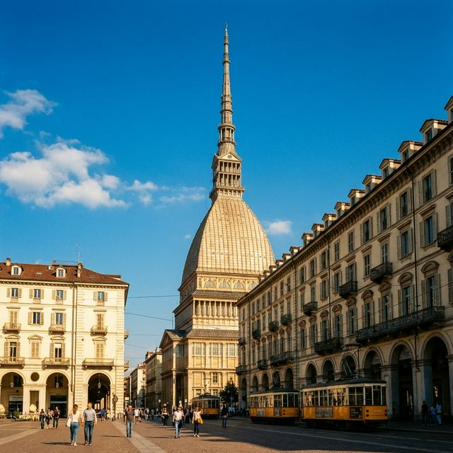
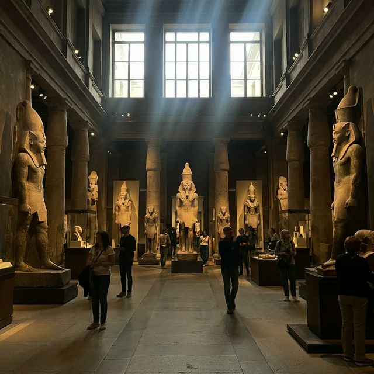
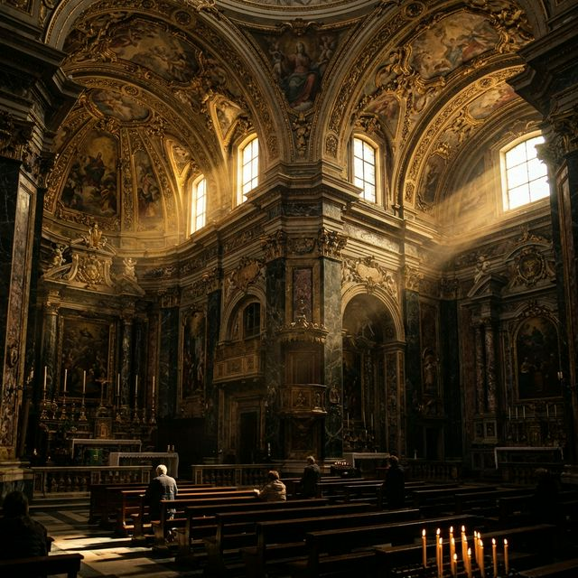
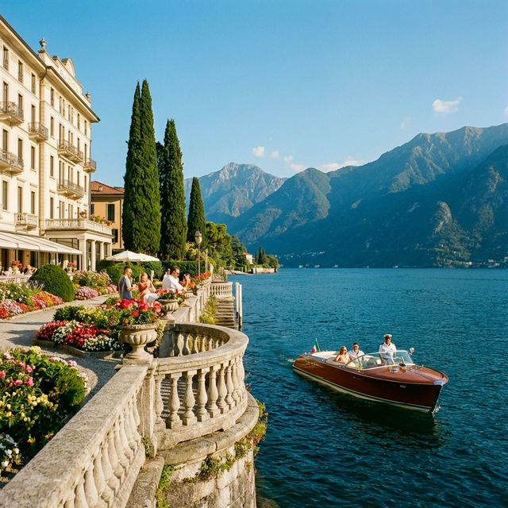
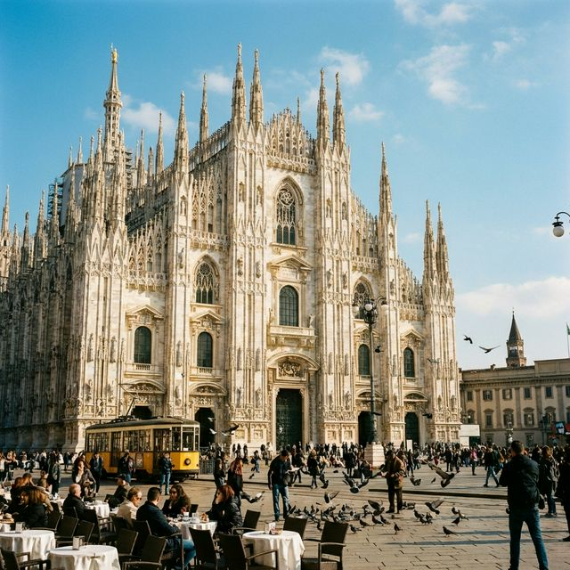

5 城不走回頭路，動線最輕鬆。鎖定 Grand Hotel Victoria 作為蜜月高潮，享受頂級 ERRE SPA，並自己租船駕駛遊湖。
第一樂章：皇室典雅
Day 1-3都靈 (Torino)
Turin Palace Hotel・百年 Bicerin 熱巧克力・埃及博物館。
第二樂章：美食之都
Day 3-5波隆那 (Bologna)
Casa Nina・肉醬寬麵・美食探索。
第三樂章：水都迷情
Day 6-8威尼斯 (Venezia)
Carnival Palace Hotel・Cicchetti 酒吧巡禮・彩色島。
第四樂章：湖光山色
Day 9-11科莫湖
(Menaggio)
Grand Hotel Victoria ✨・ERRE SPA・自己租船駕駛遊湖。
終章：時尚句點
Day 12-13米蘭 (Milano)
iQ Hotel Milano・最後採買・甜蜜回家。
下飛機注意事項
長榮 BR95 落地後的「黃金 60 分鐘」執行表 — 您已在台灣換好歐元、買好 eSIM，贏在起跑點！
航班資訊
航班：長榮 BR95 台北 (TPE) ➔ 米蘭馬爾彭薩 (MXP)
抵達：預計早上 06:50 抵達第一航廈 (Terminal 1)
氣溫：外面約 5-8°C，記得準備大外套！
✈️ 落地前 — 開啟 eSIM & 準備文件
飛機降落開始滑行時，立刻打開手機數據漫遊 / 啟用
eSIM。不要等到進航廈才開，確保一下飛機就有網路可以聯繫或查地圖。
📋 手機裡備妥以下文件（截圖或 PDF）：
- 護照 — 隨身帶好，等下馬上要用
- Flibco 巴士電子票 — Ticket #35426242 的確認信或 PDF
- 飯店訂房確認信 — Turin Palace Hotel 的 Booking 確認信
- 回程機票訂位紀錄 — 海關可能會問你什麼時候離開
🛂 通關 — EES 生物辨識 + 護照查驗（最耗時！）
⚠️ 2025 年 10 月起，歐盟啟用全新 EES（入出境系統），取代傳統護照蓋章！第一次入境需要登錄指紋和臉部照片，資料保留 3
年，之後再訪歐盟就不用重做。
下飛機後跟著 「Passport Control / Border Control」 指標走。台灣護照走 「Non-EU /
All Passports」 區域。到現場後看哪條路有開放：
【路線 A：自助 Kiosk + e-Gate（快速通道）】
如果看到有 「Self-Service Kiosk」 或 「Automated Border
Control」 的機台開放給非歐盟旅客：
- ① 在自助 Kiosk 掃描護照資料頁（有照片那頁朝下放在掃描區）
- ② 按壓指紋：螢幕會指示你把左手四指平放在感應區 → 再換右手四指
- ③ 拍攝臉部照片：看著機台上方的攝影機，拿下口罩和眼鏡，停留 2-3 秒
- ④ 機台會列印或顯示一個 QR code / 通行碼
- ⑤ 拿著這個碼走到旁邊的 e-Gate 自動閘門，掃護照 + 掃碼/看鏡頭，閘門自動開 → 通關完成！
如果 e-Gate 沒有開放給非歐盟旅客，或是排隊太長，直接走人工櫃台：
- ① 排隊到邊境官員櫃台
- ② 把護照打開到資料頁遞給官員
- ③ 官員會操作 EES 系統：掃你的護照 → 請你按指紋（左右手各四指放在櫃台的感應器上）→ 拍攝臉部照片（看著櫃台上的攝影機）
- ④ 官員可能會簡單問幾個問題，用英文回答即可：
- 🗣️ 「Purpose of visit?」 → 「Honeymoon」
- 🗣️ 「How long?」 → 「8 days」
- 🗣️ 「Where are you staying?」 → 「Turin and Bologna」
- 🗣️ 「Return ticket?」 → 出示手機上的回程機票確認信
💡 兩條路結果一樣，都會完成 EES 登錄。到現場看哪條隊伍短就走哪條！
⏱️ 預估時間：排隊 + 通關約 30-60 分鐘。不用緊張，06:50 落地、09:30 才搭車，時間非常充裕！
🧳 領行李 — 整理儀容
通過護照查驗後，跟著 「Baggage Claim」 指標走到行李轉盤區。抬頭看螢幕找 BR95
對應的轉盤號碼。
等行李時，建議把大外套拿出來穿上（外面氣溫約 5-8°C，從亞熱帶飛來會覺得很冷！）。整理一下儀容，準備迎接義大利！
🚪 海關 — 綠色通道
拿到行李後，走 綠色通道（Nothing to Declare）直接出來，不需要額外申報。出了通道就是 Level 0 入境大廳。
☕ 買咖啡 — 找零錢（重要！）
入境大廳有好幾間 Bar（義式咖啡吧）。去吧台點一杯 Espresso（約 €1.5），用台灣換的 €50 或
€100 大鈔找開成小面額零錢。
💡 義大利咖啡文化初體驗：跟當地人一樣站在吧台喝（不要坐下來，坐下來會貴很多！）。一口悶掉，這就是正宗義式
Espresso 的喝法。搭車、給小費、投販賣機都需要小面額零錢，這步很重要！
🚌 下到 Level -1 — 前往 Flibco 巴士站
不要搭火車！你已經有 Flibco 巴士票了！
從入境大廳（Level 0）找電梯或手扶梯往下一層到 Level -1（Piano
-1），這是所有長途巴士的集中上車區，就在 Sheraton Hotel 正前方。
到了 Level -1 後沿指標找到 Bay 8（Flibco 往都靈方向的專屬候車處），09:20 前到位等車。
👉 詳細搭車 SOP 請看 Day 1 行程的 09:30 Flibco 巴士活動。
第一階段：都靈 (Torino)
─ 皇室優雅之旅 ─
「在巴洛克宮殿間，品嚐百年甜點」
住宿：Turin Palace Hotel (車站對面)
重點：適應時差、享受飯店、百年咖啡館與皇宮巡禮。
抵達、俯瞰全城與河畔漫步
關於 Torino：義大利的第一個首都
都靈是薩伏依王室的首都，1861年義大利統一後的第一個首都。巴洛克宮殿林立，也是義大利咖啡和巧克力文化的發源地。

今日預約：14:10 國家電影博物館、14:40 全景電梯。當天只要帶充好電的手機出示數位杜林卡與博物館/電梯票的 PDF 即可入展！
Flibco 巴士 MXP T1 Bay 8 出發 📍
🎫 已購票！Ticket #35426242 / Shuttle MXP-TOR R4
📋 搭車 SOP（超詳細版）：
- ① 領行李：下飛機後跟著「Baggage Claim」指標走，在行李轉盤拿到行李。
- ② 下到 Level -1：出了海關後你會在 Level 0（Arrivals 入境大廳）。找電梯或手扶梯往下一層，下到 Level -1（Piano -1）。這層就在 Sheraton Hotel 正前方，是所有長途巴士的集中上車區。
- ③ 找 Bay 8：到了 Level -1 後會看到一整排有編號的巴士月台（Bay 1, 2, 3...）。沿著地上或牆上的指標，往 Bay 8 方向走。Bay 8 是 Flibco 往都靈方向的專屬候車處。
- ④ 認車：Flibco 巴士車身是黃綠色，有顯眼的 「Flibco」 字樣，前擋風玻璃會顯示目的地「TORINO」。
- ⑤ 09:20 前到 Bay 8 等車（官方建議提前 10 分鐘，09:30 準時發車，不等人！）
- ⑥ 上車：給司機看手機上的 Ticket Number 或 email 確認信。大行李放在巴士下方行李艙（司機會幫你開），隨身小包帶上車。
Flibco 巴士抵達都靈 Porta Susa 📍
📍 下車地點：Porta Susa 車站外（Corso Bolzano 與 Corso Matteotti
交叉口）。巴士停靠在路邊，司機會開下方行李艙讓你拿行李。
📋 下車後叫 FreeNow 計程車 SOP：
- ① 拿行李：巴士停妥後，先到車側取出行李箱。確認行李沒拿錯。
- ② 走到 Porta Susa 車站大門口：下車處旁邊就是 Porta Susa 車站的玻璃帷幕長廊入口。拖行李走到車站大門口的屋簷下站好（有遮雨、有明確地址，方便司機找到你）。
- ③ 打開 FreeNow APP：
- 上車地點：APP 會自動偵測你的 GPS 位置，確認顯示的是 「Stazione Porta Susa」 或 「Corso Bolzano」 附近即可
- 目的地：輸入「Turin Palace Hotel」或「Via Sacchi 8, Torino」
- APP 會顯示預估價格（約 €8-12）和預估到達時間（通常 3-5 分鐘內）
- 確認叫車！
- ④ 等車：APP 會顯示司機姓名、車牌號碼、車款顏色。站在車站門口等，司機會開到你面前停車。確認車牌吻合再上車。
- ⑤ 上車：大行李放後車廂（司機通常會幫忙放），上車就好。目的地已經在 APP 裡設定好了，不用跟司機講話。付款也是 APP 自動扣信用卡，下車直接走人就好，超級方便！
⚠️ 計程車注意事項（不管用 APP 或招呼站都要知道）：
- 不要在路邊攔車！義大利計程車不能像台灣一樣在路邊招手攔。一定要到「Taxi」招呼站排隊，或用 APP 叫車。
- 認明正規計程車：白色車身、車頂有 「TAXI」 燈箱、車門有公司名稱和編號、儀表板有跳表。不要搭無標誌的私家車！
- 費用參考：起跳 €3.5，到飯店約 €8-12。行李每件加 €0.50。
- 小費：義大利不需要給小費，湊整數即可（例如 €9.3 付 €10）。
Porta Susa 有地鐵站！進站直接用信用卡感應（Tap & Go）扣 €1.7，搭一站到 「Porta Nuova」 出站，飯店就在車站正對面過個馬路就到。但帶大行李搭手扶梯比較辛苦，建議還是搭計程車。
Turin Palace Hotel — 寄放行李 📍
🏨 飯店歷史：Turin Palace Hotel 始建於 1872
年，是都靈最具歷史的頂級飯店之一，見證了義大利統一後的黃金時代。曾入住過的名人包括指揮大師
Arturo Toscanini、歌劇天后 Maria
Callas、爵士巨匠 Louis Armstrong、搖滾巨星
David Bowie 和 Mick
Jagger，甚至英國伊莉莎白女王和瑞典國王卡爾十六世都曾下榻於此。2007
年閉館進行大規模修復，2015 年重新開幕，保留原始建築外殼，內裝融合 Art Deco
風格的 1920-30 年代古典家具與現代極簡設計。2017 年獲 TripAdvisor
旅客評選為全球第 3、義大利第 1 的最佳飯店！
🏗️ 飯店設施與開放時間：
- 🍳 早餐（含在房價內）：每日 07:00-11:00。豐盛自助 Buffet，亮點包括：現做炒蛋/太陽蛋/水波蛋、培根、皮埃蒙特在地風乾火腿 (Prosciutto)、布蕾莎拉 (Bresaola)、Toma Piemontese 與 Grana Padano 起司、新鮮可頌 (Brioche)、鬆餅佐楓糖漿、各式麵包穀片、水果優格。評價極高，號稱都靈最棒的飯店早餐之一！
- 🍽️ 頂樓餐廳 Les Petites Madeleines：米其林推薦等級！可俯瞰 Porta Nuova 車站廣場與都靈天際線。營業時間 週二至週六 19:30-22:30，週日一僅供住客。建議提前請櫃台預約，蜜月晚餐的絕佳選擇！
- 💆 SPA & 水療中心（需預約！）：設有按摩浴池、淨化桑拿、蒸氣土耳其浴、Hammam。
- 營業時間：週三至週五 17:00-21:00 ／ 週六日 15:00-21:00
- ⚠️ 週一、週二公休！（Day 1 週一公休 ❌、Day 2 週二公休 ❌、Day 3 週三有開 ✅ 17:00-21:00）
- 費用：€20/人（1.5 小時），預約按摩的話 SPA 免費入場
- 限制：同時段最多 8 人，務必提前到櫃台預約！16 歲以上才能使用
- 🏋️ 健身房：每日 06:00-21:00，配備現代化器材，建議預約時段。
- 🍸 大廳酒吧 (Lounge Bar)：典雅的 Art Deco 風格酒吧，提供精緻雞尾酒與皮埃蒙特在地 Barolo/Barbaresco 葡萄酒。適合晚上散步回來後小酌一杯。
- 🛏️ 客房：隔音極佳的落地窗、義大利頂級寢具、免費 Minibar（含氣泡水和果汁）、Nespresso 膠囊咖啡機、浴袍拖鞋、大理石浴室配備雨淋花灑與浴缸。
- 🛎️ 服務：免費高速 Wi-Fi、24 小時客房服務、禮賓服務（可代訂餐廳、叫車、購票）、行李寄存。
💡 提醒：因為數位杜林卡已經買好在手機裡了，不需要花時間去旅遊局換實體卡，直接出發！
💡 SPA 注意：很可惜，Day 1（週一）和 Day 2（週二）SPA 公休，Day 3（週三）17:00 才開但中午就要退房去波隆那，所以這次住宿期間無法使用 SPA。不過房間內的大理石浴缸和雨淋花灑一樣很舒服！
Monegato Primi Piatti (新鮮手工麵) 📍
🚶 移動方式：從飯店大門出來，沿著 Via
Lagrange（都靈的精華街區）散步，經過雄偉的卡里尼亞諾宮 (Palazzo Carignano) 後，轉入
Via Giuseppe Verdi 抵達餐廳。這家店就位在都靈大學與接下來要去的「安托內利尖塔」旁邊，步行約
20 分鐘（1.5 公里），沿途風景極佳，且完美順路。
📜 餐廳歷史與特色：這是一間主打「快現做、高品質、高性價比」的新鮮手工義大利麵專賣店 (Monegato -
Primi Secondi A
Nessuno)。雖然店面現代、節奏明快，但它憑藉著現做手工麵條與濃郁道地的醬汁，征服了都靈當地大學生與上班族的胃，在當地擁有極高人氣。如果你想吃到熱騰騰的義式平民美食又不想花費太多時間等待，這裡是絕佳首選！
📋 推薦點法與菜單概念：
🍝
自由搭配：先選「麵體」再選「醬汁」
- • 第一步選麵體：推薦嚐試 Tajarin（手工細蛋麵，皮埃蒙特地區的靈魂）、Agnolotti del Plin（皮埃蒙特手工小肉餃），或是 Gnocchi（手作馬鈴薯麵疙瘩）。
- • 第二步選醬汁：可以選擇 Ragù（經典波隆那肉醬）、Burro e Salvia（奶油鼠尾草醬，搭配肉餃最對味！）、或是 Salsa di Noci（核桃白醬）。
- • 其他經典選項：店內也會有當日特製的 Lasagna（千層麵）或 Carbonara 等等。
這是位於都靈舊城區（靠近羅馬遺跡）的一間傳奇小酒館 (Piola)。它不接受預約，擁擠且吵雜，但提供極高性價比的皮埃蒙特傳統料理（提供綜合前菜 Misto、手工餃 Plin、傳統甜點 Bunet）。如果當天行程不趕，且你想體驗更地道、更具義大利庶民風情的午餐（需提早在 11:50 抵達門口排隊卡位），可以考慮將這裡作為備案！
安托內利尖塔 (Mole Antonelliana) ─ 國家電影博物館與全景電梯 📍
🚶 移動方式：從 Monegato Primi Piatti 吃飽出來後，沿著 Via
Giuseppe Verdi 或 Via Montebello
散步，尖塔就在旁邊，步行約 2-5 分鐘即可抵達地標下方，非常近！
📜 建築歷史：安托內利尖塔是都靈最具標誌性的地標，由建築師 Alessandro
Antonelli 於 1863 年開始建造。原本只是一座猶太教堂，但
Antonelli 野心勃勃地不斷加高，最終蓋到了驚人的 167.5
公尺，成為當時「全世界最高的磚造建築」！因為蓋太高超出預算，猶太社群付不起後續費用，最終由都靈市政府接手完工，成為城市象徵。尖塔頂端的星星在夜晚會亮燈，是都靈天際線中最美的一顆明星。現在被印在義大利
2 歐分硬幣上！
🛗
第一站：全景電梯（先搭電梯！14:10 入場）
入場後直接走到一樓中庭，先排全景電梯的隊（電梯在博物館中央的巨大穹頂正下方）。
- ① 排隊等候：電梯一次約載 10-15 人，排隊時間約 10-20 分鐘。排隊時可以先抬頭看看穹頂——你等下就要飛到那上面去！
- ② 進入電梯：這是一部全透明玻璃電梯，完全懸吊在尖塔內部的中空處，四周沒有任何牆壁遮擋。電梯開始上升時，腳下的博物館越來越小，旁邊的螺旋坡道和展品逐漸俯瞰——59 秒直達 85 公尺高的觀景台！有懼高症的人會覺得很刺激，但非常安全。
- ③ 觀景台（Tempietto）：走出電梯，來到 360 度環繞式觀景台。這裡能看到：
- 腳下：整齊劃一的棋盤式紅磚屋頂街區，都靈的城市規劃一覽無遺
- 東邊：蜿蜒的波河 (Po) 和對岸的蘇佩爾加大教堂 (Superga)
- 西邊：天氣好的話，連綿雪白的阿爾卑斯山脈群峰（包括白朗峰 Mont Blanc！）
- 北邊：Porta Susa 車站的現代玻璃長廊
- ④ 拍照時間：觀景台上停留約 15-20 分鐘，拍完照後搭電梯下來。
🎬 第二站：國家電影博物館（下電梯後慢慢逛）
從電梯下來後，開始逛博物館。出示手機上的都靈卡 QR code 即可（博物館含在都靈卡內）。整座博物館沿著尖塔內部的螺旋坡道由下往上展開，像一場穿越時光的電影旅程：
- 📍 B1 地下室 —「電影考古學」
從最底層開始！展示電影發明前的光學魔術：暗箱 (Camera Obscura)、走馬燈 (Zoetrope)、魔術幻燈 (Magic Lantern)。可以動手轉動走馬燈、窺視暗箱內的影像，體驗 18-19 世紀人們第一次看到「動態影像」時的驚奇。 - 📍 中庭 — 殿堂大廳 (Aula del Tempio)
⭐最大亮點！
博物館中央是一個挑高直通穹頂的巨大空間。地上擺滿了紅色絲絨躺椅（約 200 張），躺下來仰望 85 公尺高的內部穹頂，四面牆上的大螢幕播放著經典電影片段——宛如置身一場光影交織的夢境。這是全世界最獨特的博物館體驗之一，一定要躺下來感受！ - 📍 螺旋坡道 — 電影類型展區
沿著螺旋坡道往上走，兩側是按電影類型分區的互動展間：- 🎭 科幻區：展出《乘大乘都乗會》系列的道具和電影原始設計圖
- 👻 恐怖區（膽小慎入！）：完全黑暗的房間，陳列經典恐怖片道具，配合詭異音效，走到裡面會有「驚嚇裝置」突然啟動
- 🎬 動畫區：展示定格動畫的製作過程，可以看到一格一格的拍攝原理
- 🎥 西部片區：重現義大利「Spaghetti Western」的拍攝場景
- 📍 互動體驗區 ⭐拍照重點！
- 綠幕合成：站在綠幕前，螢幕上會把你合成到經典電影場景中——可以拍超有趣的照片！
- VR 虛擬實境：戴上 VR 頭盔體驗虛擬電影場景（可能需排隊）
- 復古都靈咖啡館場景：可以坐在重現的 19 世紀咖啡館佈景中拍照
- 📍 海報迴廊 (Poster
Gallery)
最上層展示了大量經典電影海報的原版收藏，從默片時代到現代，是電影迷的天堂。
Torrefazione Caffè Vergnano (老牌精品咖啡館) 📍
🚶 移動方式：從安托內利尖塔出來後非常順路！沿著 Via degli
Artisti 走，轉入 Via Santa Giulia，步行僅需大約
5 分鐘 (350 公尺) 即可抵達位於 37 號的 Caffè Vergnano。這區是都靈大學城旁邊的
Vanchiglia 街區，充滿濃濃的文藝氣息與學生活力。
📜 咖啡店歷史：Caffè Vergnano 是義大利歷史最悠久的咖啡烘焙商之一，創立於
1882 年，發跡於皮埃蒙特大區的 Chieri 小鎮。這間位於 Via Santa Giulia
的門市不僅傳承了百年的義式濃縮咖啡技藝，裝潢也充滿了復古與現代交融的優雅氣息。有別於傳統義大利 Bar
只能站著快速喝完，這裡提供舒適的座位區，非常適合剛逛完博物館、需要放鬆雙腿的旅人。
📍 地址：Via Santa Giulia, 37, 10124 Torino TO
🏠
空間特色：店內以原木色調和溫暖的燈光為主，充滿放鬆的沙龍氛圍。牆上裝飾著咖啡豆的麻布袋和復古咖啡機具，散發著正宗義式老派咖啡館的魅力。
☕
推薦點法：
- • Espresso (經典濃縮) — 體驗百年烘豆家族最純粹的義式經典風味。
- • Marocchino (摩洛哥咖啡) ⭐推薦！ — 皮埃蒙特的特色咖啡飲品，底層是巧克力醬或可可粉，加上濃縮咖啡，頂部覆蓋綿密奶泡，香濃可口。
- • 各式糕點 (Pasticceria) — 搭配一杯咖啡和一塊手工義式酥皮點心或蛋糕，完美！
超市採買 (Lidl) & 回飯店享用美食 📍
🚶 移動方式：喝完咖啡後，您可以慢慢散步穿越都靈最壯麗的 維托里奧·威尼托廣場 (Piazza
Vittorio Veneto)，沿著充滿美麗拱廊的 波河街 (Via Po)
一路逛回市中心。接著轉向飯店的方向，抵達位於 Via Carlo
Alberto 22號 的 Lidl 超市。這是一段約
20-25 分鐘的美麗散步路線（沿途也可隨時搭乘路面電車代步）。距離飯店步行僅約 8 分鐘。
🏪
超市特色：這間位在市區精華地段的 Lidl，不僅價格非常親民實惠，最大的特色是擁有非常新鮮的自家烘焙坊
(Bakery) 以及豐富的歐洲各地食材。來到義大利，逛超市本身就是個超棒的景點。
🛒 推薦採買清單：
- 現烤麵包部 (Bakery)：Lidl 的烘焙區 CP 值極高，可以挑選剛出爐的脆皮可頌、蝴蝶酥，或是買根法棍配起司。
- 帕瑪生火腿切片 (Prosciutto Crudo di Parma)：挑選冷藏區已經切好的薄片包裝，便宜又好吃！
- 新鮮莫札瑞拉起司球 (Mozzarella di Bufala)：用水牛奶製成的版本更濃郁。
- 微氣泡白酒 (Prosecco) / 啤酒：Lidl 經常有高性價比的酒款，挑一瓶冰涼的酒配火腿起司最對味。
- 氣泡水 (Acqua Frizzante) & 零食：拿一大瓶便宜的氣泡水，順便搜刮一些洋芋片或巧克力。
💡 安全路線提醒：波河街與羅馬街一帶是都靈最精華安全的市中心區域，全程路燈明亮、遊客居民眾多，夜晚散步非常舒適放心。
⚠️ 酒精提醒：超市買的酒帶回飯店房間喝完全 OK！但不要在戶外邊走邊喝——都靈夜間禁止在市區戶外攜帶玻璃瓶裝酒精飲品。
聖卡洛廣場 (Piazza San Carlo) 夜間散步 📍
🚶 移動方式：吃飽休息後，從飯店大門出來左轉，沿著筆直的 Via
Roma 📍（都靈的香榭麗舍大街）一路往北走。Via Roma
兩側全是華麗的拱廊，地上鋪著光亮的大理石地磚，走約 10
分鐘（800 公尺）即到達廣場。
📜 廣場歷史：聖卡洛廣場被暱稱為都靈的「客廳 (il Salotto di
Torino)」，是義大利最優雅的廣場之一。廣場由薩伏依王室御用建築師 Carlo di
Castellamonte 於 1618 年開始設計，1638
年正式落成，面積達 12,768 平方公尺（長 168 公尺 × 寬 76
公尺），是都靈巴洛克城市規劃的巔峰之作。當初建造時，都靈正從一個邊陲軍事要塞蛻變為薩伏依公國的華麗首都，這座廣場就是那個黃金時代的象徵。
🏷️ 多次更名：廣場最初被法國攝政太后 Christine de
France 命名為「皇家廣場 (Piazza Reale)」；1650
年因頻繁舉辦軍事閱兵而改稱「閱兵廣場 (Piazza
d'Armi)」；拿破崙佔領時期更被改名為「拿破崙廣場 (Place
Napoléon)」；直到 18 世紀末才以廣場南端的聖卡洛教堂為名，定名為今日的 Piazza
San Carlo。2004 年廣場完成全面行人徒步化改造，禁止車輛通行。
🗡️
廣場中央：「青銅駿馬」騎馬銅像
廣場正中央矗立著薩伏依公爵 Emanuele Filiberto
的騎馬銅像，都靈人暱稱它為「il Caval 'd Brons」（皮埃蒙特方言「青銅馬」）。銅像由雕塑家
Carlo Marochetti 創作，於 1838 年 11 月 4
日揭幕。雕像描繪的是 1557 年 聖昆廷戰役 (Battaglia di San
Quintino)
大勝法軍後，公爵將劍緩緩插回劍鞘的瞬間——這個姿勢象徵著戰爭結束、和平到來，也宣告了薩伏依家族回歸故土的輝煌時刻。這場勝利讓薩伏依家族從法國的陰影中獨立出來，奠定了日後統一義大利的根基。
🏛️ 建築亮點：
- ⛪ 雙子教堂 (Chiese Gemelle)：廣場南端的 Santa Cristina 📍（1639 年動工）和 San Carlo Borromeo 📍（1619 年動工） 兩座教堂外觀幾乎一模一樣，但實際上背後是完全不同的故事！Santa Cristina 由 Carlo di Castellamonte 設計，最大的亮點是正面華麗的巴洛克立面——由義大利建築巨匠 Filippo Juvarra 於 1715-1718 年完成，被譽為都靈最優雅的教堂門面之一，裝飾了聖女德蕾莎與聖克里絲蒂娜的雕像。而 San Carlo Borromeo 的立面則晚了一個多世紀，由建築師 Ferdinando Caronesi 於 1834 年仿照 Juvarra 的風格補建完成。所以兩座教堂雖然「長得像雙胞胎」，其實相差了 超過 100 年！這也是歐洲最著名的「都市規劃對稱」案例之一。
- 🏛️ 四周拱廊與宮殿：廣場四面被優雅的巴洛克式拱廊環繞，這些拱廊同樣出自 Castellamonte 之手（1643-1646 年間陸續完成），底下是都靈最精華的咖啡館與精品店。重要宮殿包括 Palazzo Solaro del Borgo 📍 和 Palazzo Guido Villa 📍，外立面統一而高貴，構成了極為和諧的城市景觀。
- Caffè San Carlo 📍（1822 年開業）：都靈最古老的歷史咖啡館之一，最初叫做「閱兵廣場咖啡館」。19 世紀，這裡是義大利統一運動 (Risorgimento) 的秘密聚會場所——愛國者、政治家、文人們在水晶吊燈和紅絲絨座椅間密謀推翻外國統治，打造統一的義大利！因為政治活動太頻繁，咖啡館曾被政府多次勒令關閉。更厲害的是，Caffè San Carlo 是全歐洲第一間使用煤氣燈照明的咖啡館！曾到訪的名人包括大文豪 Alexandre Dumas（三劍客的作者）、義大利第一任總統 Luigi Einaudi、以及哲學家 Benedetto Croce。內部裝潢至今仍保留著古董鏡子、大理石圓柱、金箔天花板和華麗水晶吊燈，踏進去就像穿越時空。
- Caffè Torino 📍（1903 年開業）：拱廊另一側的優雅名店，以 新藝術風格 (Art Nouveau) 裝潢聞名，自開業起就是都靈上流社會的社交客廳。好萊塢黃金年代的巨星 James Stewart、Ava Gardner、Brigitte Bardot 都曾是座上賓，義大利國王 Umberto I 也是常客。精緻的糕點、雞尾酒和咖啡至今仍維持極高水準。
在 Caffè Torino 📍 門口的人行道上，低頭找一找鑲嵌在花崗岩地磚中的一隻小銅牛浮雕——這隻昂首站立的公牛是都靈的城市象徵（「Torino」的字根就是拉丁文的「小牛 Taurinus」！），安裝於 1930 年。都靈最有名的都市傳說：只要用腳踩住金牛的蛋蛋然後原地轉一圈，就能帶來好運！這個傳說幾乎每個都靈人都知道，雖然含蓄的義大利人通常不好意思承認自己踩過 😆——但鐵證如山：牛蛋蛋的位置已經被踩成了一個光滑凹陷的小坑，閃閃發亮，跟周圍粗糙的花崗岩形成鮮明對比！蜜月求好運，當然要踩一下！
✨ 夜景體驗：最棒的是晚上打燈後的氛圍！四周的拱廊與巴洛克建築在鵝黃色路燈的映照下，顯得金碧輝煌且超級浪漫。廣場地面的石板也會映出建築的倒影，如同走在一面巨大的鏡子上。雙子教堂的正面在夜間燈光的烘托下更顯莊嚴神聖，Emanuele Filiberto 的銅像在星空下彷彿活了過來。坐在拱廊下的咖啡館露天座位，點一杯 Aperol Spritz 或一杯皮埃蒙特紅酒，看著廣場上三三兩兩散步的人們——手牽手在這裡感受歐洲老城深邃迷人的夜景魅力，為第一天畫下完美句點。
🍹 Aperol Spritz 是什麼？義大利的「國民開胃酒」！
如果你在義大利街頭看到幾乎每個人手上都拿著一杯鮮豔橘色的飲料，那就是 Aperol Spritz！這杯酒誕生於 1919 年的 Padova（帕多瓦），當時 Barbieri 兄弟在國際博覽會上推出了一款名為 Aperol 的橘色利口酒（酒精濃度僅 11%，非常溫和），以獨特的苦橙、龍膽草和大黃根配方調製而成。後來有人把 Aperol 加入威尼托地區流行的 Prosecco 氣泡酒和少許 蘇打水，再放上一片橙片和冰塊，就成了今天風靡全義大利（甚至全世界）的 Aperol Spritz！
- 🧪 經典配方：3 份 Prosecco + 2 份 Aperol + 1 份蘇打水 (Soda)，加入冰塊，最後放上一片新鮮橙片。
- 🍊 口感：入口是清爽的氣泡感，接著是溫和的苦甜橘香，帶有淡淡的草本風味，收尾乾淨不膩。酒精感極低（約 8-11%），就像大人版的橘子汽水，女生也會很喜歡！
- 🌅 義式 Aperitivo 文化：義大利人有一個獨特的「Aperitivo」傳統——每天傍晚 18:00-20:00 之間，到酒吧點一杯開胃酒搭配小點心，作為晚餐前的社交儀式。Aperol Spritz 就是 Aperitivo 的絕對王者！很多酒吧點一杯 Spritz（約 €5-8）還會附贈一盤免費的下酒小點（橄欖、薯片、小三明治等）。
- 📸 拍照必備：那杯鮮豔的橘色配上廣場的巴洛克金色建築，絕對是 Instagram 等級的夢幻蜜月照！
⚠️ 注意：可以在廣場散步拍照，但不要坐在教堂或廣場台階上飲食，義大利嚴格執法，最高可罰 €470！
羅馬古蹟、皇世與古埃及

今日需提前預約：14:00 的「埃及博物館 (Museo Egizio)」場次。(已預約完成，出示 PDF 門票與數位都靈卡即可)
Turin Palace Hotel 豪華早餐 📍
🍳
早餐內容：這間飯店被旅客瘋狂讚譽的重點就是他們極致奢華的自助早餐！早餐區位於飯店一樓的優雅餐廳，有巨大的落地窗引入自然光線。
✨ 必吃推薦：
- 現烤義式可頁 (Cornetto)：每天早晨現烤出爐，外皮酥脆、內餒包含植物奶油 (Crema)、果醬 (Marmellata) 和巧克力 (Cioccolato) 三種口味。
- 現場照窩蛋料理：師傅會在現場直接幫您現煎歐姆蛋、烒蛋或太陽蛋，可以加燻鮭肉或起司。
- 新鮮起司 & 火腿區：多種義大利產區起司與現切火腿薄片，配上新鮮出爐的 Focaccia 麻花麻。
- 手工蛋糕 & 水果：多款精緻的義式經典甋糕，以及新鮮當季水果。
- 現場拉花卡布奇諾：由專業咖啡師現場製作，搭配早餐是絕配。
帕拉蒂內城門 (Porte Palatine) 📍
🚋 移動方式：從飯店大廳出來過馬路到對面 Porta Nuova
F.S. (站牌ID: 253) 📍 的路中央電車島，搭乘路面電車 4
號線往
Falchera 方向，在 Porta
Palazzo (站牌ID: 202) 📍 站下車，車程約
10 分鐘。下車後往北走 3 分鐘即到。
🎟️ 購票方式：上車找黃色感應機，用 Apple Pay / 實體信用卡
嗶一下即可（單程 €1.90，100分鐘內可轉乘，每人需刷一張卡）。💡 建議用 Apple
Pay，感應更快且免掏錢包最安全。
1. 攔車：電車「不會」自動停！看到車子靠近，務必像在台灣一樣「舉手攔車」。
2. 上車門：請一律從「前門」或「後門」上車，感應機台都在前後門。
3. 下車門：電車的「中門」是專屬下車門。快到站時一定要提前按下車內的「紅色下車鈴 (STOP)」，然後走到中門等候下車。
📜 古羅馬帝國的北大門：超過 2000 年的歷史
要認識帕拉蒂內城門，首先要回到 公元前 28 年——羅馬帝國第一位皇帝奧古斯都 (Augustus) 在阿爾卑斯山腳下建立了一座軍事殖民地，命名為「Julia Augusta Taurinorum」（簡稱 Augusta Taurinorum），這就是今天都靈 (Torino) 的前身！這座城市按照典型的羅馬棋盤式格局規劃，有高牆環繞、四座主要城門，而帕拉蒂內城門就是其中的「Porta Principalis Dextra」——城市的右主門，也就是正北方的主入口。所有從北面（阿爾卑斯山方向）進入城市的人，都必須通過這道大門。
🏷️ 名稱由來：「Palatina」這個名字的起源有多種說法：可能源自附近的一座宮殿 (Palatium)，也可能與曾經相鄰的圓形劇場有關。這道城門穿過了超過 2000 年的歲月，見證了羅馬帝國的興衰、蠻族入侵、中世紀的黑暗時期、以及義大利統一運動，至今仍然屹立不搖！
🏗️ 建築結構解析
帕拉蒂內城門是全世界保存最完整的公元 1 世紀羅馬城門之一，整體由紅磚砌築而成（羅馬時期原本外面還有灰泥粉刷，甚至可能有彩色裝飾，但歷經 2000 年風化只剩下紅磚本體）。
- 雙塔樓：兩座高達 30 公尺的角塔，橫切面呈獨特的 16 邊形（接近圓形但不是真正的圓形）。右側塔樓保存了較多羅馬原始結構，左側塔樓在 1404 年被中世紀重建過，並加上了城垛用於防禦。兩座塔的牆面上可以看到整齊排列的羅馬紅磚砌法（opus testaceum），磚塊之間的灰漿縫極為精確，展現了羅馬工匠驚人的技術水準。
- 中央門體 (Interturrium)：連接兩座塔樓的中央牆體長約 20 公尺，分為上下兩層窗戶——上層是平拱窗 (jack arch)、下層是圓拱窗，形成優美的韻律感。這面牆體就是城門的「正面」，面向城外的敵人。
- 四座拱門通道：城門底部開有四座通道——中間兩座較大較高，供馬車與騎兵通行；兩側各一座較窄較矮的，專供行人步行進出。走近看內壁，還能看到石槽凹痕——這是古羅馬「落閘裝置 (Cataractae)」的遺跡！守軍可以從城門上方的樓層操控，讓鐵柵欄瞬間落下封鎖通道，就像中世紀城堡的吊閘一樣。
- 內庭院 (Cavaedium)：城門的城內側原本有一個方形中庭，形成雙重防禦結構——敵人即使攻破外門，還會被困在這個封閉中庭裡遭到來自四面的攻擊。這種設計展現了古羅馬人高超的軍事防禦工程智慧。
這道城門能保存到今天其實是個奇蹟！中世紀時城門被改建為防禦堡壘，後來隨著城市擴張，城門失去了軍事功能。18 世紀初，都靈城市更新計畫中，政府竟然打算把城門拆掉以拓寬道路！幸好建築師 Antonio Bertola 力排眾議保住了它。之後塔樓被改作監獄使用（18-19 世紀），直到 1861 年義大利統一後才開始被視為珍貴古蹟進行保護。1934-1938 年間進行了大規模修復，拆除了周圍附著的老房子，讓城門重新獨立展現。2006 年起被規劃為「考古公園 (Parco Archeologico)」的一部分，成為都靈最重要的古羅馬遺產。
🗿 城門前的兩座銅像：凱撒與奧古斯都
城門正前方矗立著兩座莊嚴的青銅雕像：左邊是 凱撒大帝 (Julius Caesar) 📍，右邊是 奧古斯都皇帝 (Augustus)。不過要注意——這兩座雕像並非古羅馬原件，而是 1934 年修復時期放置的複製品。奧古斯都的雕像是仿照梵蒂岡博物館收藏的著名「Prima Porta 的奧古斯都」（全世界最有名的羅馬皇帝雕像之一）製作的——皇帝右手高舉、身披戰甲，展現出統御天下的氣勢。雖然是複製品，但擺在 2000 年歷史的城門前，與紅磚塔樓交相輝映，依然非常有震撼力。
🎭 古羅馬劇場遺跡 (Teatro Romano)
城門旁邊就是 古羅馬劇場 📍 的遺跡！這座劇場建於 公元 1 世紀，曾經可以容納約 3,500-5,000 名觀眾，是 Augusta Taurinorum 市民觀看戲劇、音樂表演和公共集會的場所。現在還可以看到保存下來的半圓形石造觀眾席 (Cavea) 的弧形基座——斜坡式的階梯座席分為幾個扇區，讓觀眾按照社會階級分區入座（跟現代演唱會分區很像！）。劇場與城門被規劃在同一個考古公園內，一起參觀非常方便。
🛒 順遊：歐洲最大露天市場 (Porta Palazzo)
城門的正南方就是赫赫有名的 Porta Palazzo 市場 📍，位於 Piazza della Repubblica 廣場。這裡是全歐洲最大的露天市場之一，數百個攤位販售新鮮蔬果、肉類、起司、香料、衣物、雜貨——來自非洲、中東、亞洲的各國移民也在此做生意，是都靈最具多元文化特色的地方。早上 8 點多正好是市場最熱鬧的時候！即使不買東西，光是感受那股能量和生活氣息就非常值得。
✨ 體驗：清晨的光線斜灑在斑駁的紅磚上，2000 年的歷史感撲面而來。這裡不是主要觀光景點，遊客極少——你可能是整個廣場唯一的東方面孔。在凱撒與奧古斯都的銅像前拍一張合照，走過古羅馬人曾經走過的四座拱門，觸摸那些記錄著千年歲月的紅磚牆面，感受古羅馬帝國曾經在這片土地上留下的不朽印記。建議停留約 20-30 分鐘拍照欣賞。
💡 拍照建議：最佳角度是站在城門正前方（面向南），將兩座塔樓、四座拱門和前方的凱撒/奧古斯都銅像一起收入鏡頭。早晨 8-9 點的斜射陽光會在紅磚上投射出溫暖的金色光澤，非常適合拍出有歷史感的照片！
都靈王宮 (Palazzo Reale di Torino) 📍
🚶 移動方式：從帕拉蒂內城門沿著 Via Porta Palatina
往南走，穿過 Piazza San
Giovanni 📍（都靈主教座堂前的廣場），左手邊就是城堡廣場
(Piazzetta Reale) 的入口。全程僅 3 分鐘步行。
🎟️ 入場：出示數位都靈卡免費入場！
📜
薩伏依王朝：從阿爾卑斯山的小貴族到統一義大利
要理解都靈王宮，首先要認識它的主人——薩伏依家族 (Casa
Savoia)。這個家族的故事堪稱歐洲歷史上最傳奇的逆襲！他們最早可以追溯到 1003
年，當時只是阿爾卑斯山邊的一個小貴族。但經過將近 900
年的經營，薩伏依家族從伯爵升格為公爵、從公爵升格為國王，最終在 1861
年完成了義大利統一，成為統一義大利的第一個王朝！都靈就是義大利的「第一個首都」（1861-1865），而這座王宮就是那段輝煌歲月的權力中心。
🏰 王宮建造：1562 年，薩伏依公爵 Emanuele
Filiberto（對，就是聖卡洛廣場那位騎馬銅像的主角！）把首都從法國邊境的 Chambéry
遷到都靈，並在原來的主教宮殿基礎上開始興建新的皇家宮邸。1645 年，攝政太后
Christine Marie（又叫 Madama
Reale）下令建造全新的宮殿，聘請了當時最頂尖的建築師接力打造：Ascanio Vittozzi
最早設計了整體框架，Carlo di
Castellamonte（設計聖卡洛廣場的同一位！）繼續擴建，後來巴洛克大師 Filippo
Juvarra 加入了他標誌性的華麗風格，最後由 Pelagio Palagi 在
19 世紀完成了新古典主義風格的室內裝潢。整座王宮就是義大利建築史的縮影！
王宮於 1997
年被列入聯合國教科文組織世界遺產——「薩伏依王室宅邸群」的核心。1946
年義大利改為共和國後，王宮成為國家博物館。
🚪
一進門就被震撼：梅杜莎鐵門 & 剪刀樓梯
走到王宮正門前，先別急著進去——抬頭看看那扇鑄鐵大門！門上裝飾著希臘神話中 梅杜莎 (Medusa)
的頭像，這是薩伏依王室的「護宅符」——傳說看到梅杜莎的眼睛就會被石化，所以把她放在大門上就是在告訴所有心懷不軌的人：「你敢進來，就變成石頭！」
這扇門建於 1840 年，至今依然威風凜凜地守護著王宮。
進入王宮後，首先映入眼簾的是 Filippo Juvarra 在 1720
年代設計的傳世之作——「剪刀樓梯 (Scala delle
Forbici)」。這座樓梯是為了王子 Carlo Emanuele III
的婚禮而建，需要在狹小的空間內升高 10 公尺，Juvarra
天才般地設計了三段式的螺旋結構，讓中央上層階梯彷彿懸浮在空中，沒有任何側面支撐！純白色的灰泥浮雕、貝殼與花卉裝飾在光線照射下如夢似幻。最有趣的彩蛋是：在懸浮拱頂的底部，雕刻了一把剪刀正在剪斷兩條辮子——傳說這是
Juvarra 對那些嘲笑他「不可能完成」的宮廷批評者的幽默反擊：「你們的嘴巴，我剪了！」😎
🔥 不能錯過的亮點：
- 👑 王座廳 (Sala del Trono)：這是整座王宮最莊嚴、最具歷史意義的房間！鋪天蓋地的黃金雕飾、巨型水晶吊燈、大面積的濕壁畫和深紅色天鵝絨，每一個角落都散發著皇家的極致奢華。廳內最珍貴的是 1789 年製作的精雕木質欄杆，環繞著王座區域。這間廳堂見證了改變義大利命運的重大歷史時刻：1848 年國王 Carlo Alberto 在此頒布了阿爾貝蒂內憲章 (Statuto Albertino)——義大利第一部憲法；1861 年，Vittorio Emanuele II 在此宣告義大利王國正式成立！你站在這裡，就是站在義大利誕生的地方。
- ⚔️ 皇家軍械庫 (Armeria Reale)：由國王 Carlo
Alberto 於 1837 年創建，收藏超過 5,000
件武器與盔甲，與馬德里和維也納的皇家軍械庫並列為歐洲三大武器收藏！展品陳列在
Filippo Juvarra 於 1733 年設計的「波蒙畫廊 (Galleria
Beaumont)」中——長廊的天花板由畫家 Claudio Francesco
Beaumont 繪製，華麗至極。
- 精金打造的騎士全套鎧甲、連戰馬都穿著的鋼鐵盔甲，整條長廊排開來的視覺衝擊極度震撼
- 珍貴館藏包括 14 世紀的拿坡里琺瑯馬嚼環、神聖羅馬帝國皇帝查理五世 (Charles V) 的佩槍
- 超過 60,000 枚錢幣、獎章和皇家印章的皇家錢幣收藏
- 📚 皇家圖書館 (Biblioteca Reale)：軍械庫隔壁就是 Carlo Alberto 於
1842 年創建的皇家圖書館。這裡的鎮館之寶是達文西 (Leonardo da
Vinci) 的真跡！
- 《論鳥類飛行手稿》(Codice sul volo degli uccelli)：達文西約 1505 年寫的手稿，記錄了他對鳥類飛行的觀察與飛行機器的設計草圖——這位文藝復興天才比萊特兄弟早了 400 年就在研究飛行！手稿於 1893 年由俄國收藏家捐贈。
- 達文西自畫像：著名的紅粉筆自畫像，描繪年邁的達文西蓄著長鬍、目光深邃——這可能是全世界最常被複製的肖像畫之一。
- 圖書館共收藏 13 幅達文西的素描真跡，1998 年建造了專門的地下展覽室來保護這些無價之寶。
- ⛪ 聖殮布禮拜堂 (Cappella della Sacra
Sindone)：這是整座王宮最奇幻、最令人屏息的空間！由數學家兼神父兼天才建築師
Guarino Guarini 從 1668
年開始設計，1694
年完工。這座禮拜堂的設計完全突破了當時的建築常識——抬頭看那座令人暈眩的幾何穹頂：由六層越來越小的拱形結構交錯嵌套而成，全部以黑灰色大理石（來自
Frabosa
採石場）打造，營造出一種從黑暗逐漸上升到光明的神秘氛圍。穹頂最頂端是一顆散發金光的星形太陽與代表聖靈的和平鴿。整個空間就像是一座通往天堂的「光之塔」，宛如進入異次元。
🔥 1997 年大火與 21 年修復傳奇：1997 年 4 月 11 日深夜，一場大火幾乎完全摧毀了這座禮拜堂！火焰吞噬了木質鷹架，大理石在高溫下碎裂崩落，熔化的青銅滴滿地面。消防員在烈焰中英勇搶救出了存放在防彈玻璃櫃中的都靈裹屍布（傳說是耶穌基督的殮葬布），萬幸未受損。之後開始了長達 21 年、耗資超過 3,000 萬歐元的浩大修復工程——約 1,150 塊大理石從原始的 Frabosa 採石場重新開採，每一塊都經過人工做舊處理以匹配原有紋理。2018 年 9 月 27 日，禮拜堂終於重新對外開放。修復工程在 2019 年榮獲歐洲最高文化遺產獎項——Europa Nostra Award。如今裹屍布本身存放在都靈主教座堂，但禮拜堂本身的建築美感就已經值得專程一看。 - 🌿 王宮花園 (Giardini Reali)：從王宮後門走出去，就是佔地近 7 公頃的皇家花園。花園最初由 Emanuele Filiberto 在 16 世紀創建，後來在 1697-1698 年由設計了凡爾賽宮花園的傳奇景觀建築師 André Le Nôtre 重新規劃！Le Nôtre 的幾何對稱花壇設計至今仍可辨認。園內最美的是 1755 年由雕塑家 Simone Martinez 創作的「海仙女與特里同噴泉 (Fontana dei Nereidi e Tritoni)」。花園被都靈的古城牆環繞，是鬧市中難得的綠色綠洲。天氣好的話，在大樹下的長椅上坐一會兒，感受一下身邊就是 300 年前國王散步的花園，非常愜意 🌳
💡 參觀建議：進門後先走「剪刀樓梯」上二樓參觀王族寢宮和王座廳，然後下來看軍械庫和圖書館（達文西真跡！），最後從側門進入聖殮布禮拜堂，以最震撼的空間為參觀畫下句點。如果天氣好，最後從後門走進王宮花園休息片刻。
The Tea - Torrefazione Moderna 📍
🚶 移動方式：從杜林王宮 (Palazzo Reale) 參觀結束出來後，往西南方向步行約
5-6 分鐘 (450公尺) 即可抵達位於 Via Corte d'Appello
2/B 的 The Tea - Torrefazione Moderna。
📜
歷史與特色：都靈最懂茶的精品茶館
這裡原先是一間歷史悠久的咖啡烘焙坊 (Torrefazione)，在 2013
年經歷了華麗轉型，成為都靈市中心首屈一指的專業茶葉專賣與品茗空間。店內環境典雅精緻，一格格的復古茶罐整齊排列在木質層架上，散發出迷人的茶香與咖啡香。
雖然名字叫做「The Tea」，但因為保留了 Torrefazione (烘焙坊)
的傳統，這裡的咖啡品質依然極佳。但最驚人的是他們擁有超過 200
種來自世界各地的精選茶葉與花草茶！
🍵
推薦體驗
- 超過 200 種珍稀茶款： 從頂級大吉嶺、日本煎茶、烏龍茶，到各式各樣的獨家特調風味花果茶 (Infusions)。店員非常專業，可以請他們根據您當下的心情或偏好推薦。
- 義式 Espresso (濃縮咖啡)： 如果您還是想喝點帶咖啡因的義式經典，這裡承襲了老派烘豆坊的底蘊，Espresso 絕對不會讓您失望。
- 精緻點心糕點： 點一壺熱茶，配上店內的法式小點或義大利傳統手工餅乾 (Biscotti)，在溫馨的空間裡享受皇宮巡禮後的放鬆。
手工鮮製麵：Brün - Buona Pasta Fresca 📍
🚶 移動方式：從 Baratti & Milano 出發，往南穿越熱鬧的羅馬街 (Via Roma)
商圈或周邊優雅的拱廊街，步行約 8-10 分鐘即可抵達這間位在市中心的人氣義大利麵專門店。(吃飽後步行前往下一個景點埃及博物館也只要大約 5
分鐘，極度順路！)
📜 餐廳歷史與特色：「Brün」在都靈當地評價極高，主打使用嚴選優質材料（例如源自皮埃蒙特的 Antiqua
Tipo 1 石磨優質軟小麥粉）每日新鮮手工製作的義大利麵 (Pasta
Fresca)。他們的理念是將最傳統的皮埃蒙特手藝結合極致新鮮的食材，做出一盤盤充滿溫度的平民美食。店面溫馨，深受當地人喜愛，醬汁濃郁卻不膩口，是體驗北義麵食文化的完美選擇。
📋
必點推薦菜色：
- Agnolotti di carne alla piemontese (皮埃蒙特傳統肉餡餃)： 🏆 絕對必點！這是皮埃蒙特地區最具代表性的麵食，包覆著豐富肉汁的餡料，外皮薄透卻帶有手工揉製的絕佳嚼勁，完美鎖住肉香。
- Ravioli ricotta e spinaci (菠菜起司手工餃)： 喜愛清爽奶香與經典北義風味的首選。
- Tagliatelle all'uovo (純手工雞蛋寬麵)： 帶有濃厚蛋香的寬麵條，搭配充滿深度的抹醬或肉醬，絕對讓人一口接一口。
- 每日特餐 (Piatti del Giorno)： 他們每天都會根據新鮮食材推出限定版麵食，例如搭配 Castelmagno (皮埃蒙特特產起司) 的麵疙瘩 或 經典千層麵 (Lasagna)，如果剛好看到黑板上有亮眼選擇，點下去就對了！
這是一家發源於都靈的超人氣創意料理，主打將義大利各區 PDO 頂級食材（例如：生牛肉香腸 Salsiccia di Bra、松露奶油、戈貢佐拉藍紋起司）塞滿烤得外皮焦脆、內裡鬆軟的大馬鈴薯中！平均價位在 €6 - €9.50 之間，份量極大。如果不巧想換個口味吃點有飽足感的特色街頭美食，可以選擇這間備案。
埃及博物館 (Museo Egizio) 📍
🚶 移動方式：從 Brün - Buona Pasta Fresca 出來後，沿著 Via
Bogino 或 Via Accademia delle Scienze
走，博物館就在 Palazzo dell'Accademia delle Scienze 內。全程步行只需約
5 分鐘（非常近）。
🎟️ 入場：出示預約 PDF 與數位都靈卡直接入場！
📜
博物館歷史：為什麼義大利會有埃及博物館？
都靈埃及博物館成立於 1824
年，是全世界最古老的埃及專題博物館，也是目前全球規模第二大的古埃及文物收藏地（僅次於開羅埃及博物館），館藏超過
40,000 件！
故事要從拿破崙遠征埃及說起。當時有一位名叫 Bernardino Drovetti
的皮埃蒙特人（都靈人），跟隨拿破崙軍隊到了埃及，後來更成為法國駐埃及總領事。他在當地瘋狂收集了超過 8,000 件珍貴文物。1824
年，薩伏依王室的 Carlo Felice 國王為了提升都靈的文化地位，豪擲重金（約 40 萬里拉）買下了
Drovetti 的整批收藏，這就是博物館的基礎。
到了 20 世紀初（1900-1920 年代），博物館館長兼偉大考古學家 Ernesto
Schiaparelli 帶領探險隊親自到埃及挖掘，又帶回了 30,000
多件文物，奠定了這座博物館在世界埃及學中不可撼動的地位。當年破解埃及象形文字的法國神人 商博良
(Champollion) 都曾在這裡閉關研究了好幾個月，他曾感嘆：「通往底比斯 (古埃及首都)
的道路，必須經過都靈。」
🔥
四大必看鎮館之寶（請務必尋找這些亮點！）
- 👑 列王長廊 (Galleria dei Re)：震撼靈魂的法老巨像群
這是博物館的高潮！2024 年底為慶祝建館 200 週年，由知名建築團隊 OMA 全新改裝完成。展廳利用反射鋁板創造出無限延伸的空間感，漫步其中彷彿走入發光的古埃及神廟。
👉 必看 1：拉美西斯二世坐像 (Ramses II)：被譽為「古埃及雕塑的極致傑作」，商博良看到它時驚呼這簡直是「埃及的阿波羅」。這尊近 2 公尺高的黑花崗岩雕像完美展現了法老的權威：頭戴藍色無畏冠 (Khepresh)，身穿半透明褶皺長袍（甚至能隱約看出底下的肌肉線條！），腳底踩著代表敵人的「九張弓」。請注意他小腿旁邊，雕刻著按比例縮小的最愛妻子妮菲塔莉 (Nefertari) 和他的兒子，象徵王朝的延續。
👉 必看 2：塞提二世巨像 (Seti II)：高達 5.16 公尺的超巨型石雕，重達數噸，法老左腳向前邁出（象徵行動力與生命力），手柱阿蒙神權杖，站在它面前絕對會感到人類的渺小。
👉 必看 3：獅頭女神塞赫美特 (Sekhmet)：走道兩側矗立著多尊令人敬畏的獅頭女神。她是古埃及掌管戰爭、破壞與瘟疫的女神，法老阿蒙霍特普三世為了平息疾病，曾經一口氣打造了數百尊她的雕像，這裡收藏了其中最精美的一批。 - 🛏️ 卡與美莉特之墓 (Tomb of Kha and Merit, TT8)：3400
年前的時光膠囊
這不僅僅是文物，這是 1906 年發現的「全世界保存最完整的非王室古墓」，完全沒有被盜墓者破壞！Kha (卡) 是第 18 王朝（大約跟圖坦卡門同時期）的首席皇家建築師。走進這個展區，你不是在看冷冰冰的石頭，而是在看一對古埃及夫妻的真實生活細節：
👉 他們的臥室：展示了完好無缺的木造防腐床，上面鋪著亞麻床單和毯子。
👉 他們的食物：3400 年前的古埃及人吃什麼？這裡有真實留存下來的大蒜、麵包、裝滿鹽醃肉的罐子，甚至還有水果和葡萄酒！
👉 Merit 的化妝檯：你可以看到女主人 Merit 的雪花石膏化妝罐、裝著古埃及黑色眼線膏 (Kohl) 的容器、假髮，還有精美的首飾。
👉 Kha 的工作工具：法老賜給他的一把鍍金的測量尺 (Cubit)。
👉 黃金面具：Merit 的木乃伊上覆蓋著華麗的黃金面具，這是他們對死後復活的最美期盼。這一切都是真的，比單看金字塔外觀震撼 100 倍！ - 📜 都靈王表 (Turin King List) & 亡靈書 (Book of the
Dead)
都靈擁有全世界最重要的莎草紙文獻收藏。
👉 必看：都靈王表 (Papyrus of Kings)：這份寫於拉美西斯二世時期的莎草紙，是全世界古埃及學者眼中的「聖杯」！因為它記錄了從神祇時代一直到當時的每一位法老名字與精確的統治時間（精確到幾年幾月幾天）。最猛的是，它是一份非常「誠實」的名單——連那些只統治幾天就被推翻的倒楣國王，甚至外來入侵的「希克索斯人」統治者都被記錄下來（這些通常會被其他紀念碑刻意抹除）。
💡 有趣的事實：這份超級重要的國家歷史，竟然是寫在廢棄的「稅收紀錄」背面！因為當時的莎草紙非常昂貴。
👉 Kha 的亡靈書：在剛才介紹的 Kha 墓室中，發現了一卷長達 14 公尺、畫滿彩色插圖的《亡靈書》。這是古埃及人的「來世通關攻略」，教導靈魂如何通過神的審判（例如著名的心臟秤重儀式）。 - 🛕 埃萊西亞神廟 (Temple of Ellesiya)：切割成 66 塊搬進室內的神廟
這不是複製品，這是一座貨真價實的 3500 年前古埃及石窟神廟！
故事非常感人：1960 年代，埃及為了建造阿斯旺水壩，許多珍貴古蹟即將永遠沉入水底。聯合國教科文組織發起全球救援，義大利出錢出力、派出了最頂尖的專家幫忙搶救古蹟（包括著名的阿布辛貝神廟）。為了報答義大利的救命之恩，埃及政府將這座圖特摩斯三世時期建造的「埃萊西亞神廟」當作禮物送給了義大利。
工程師將整座岩石神廟精準切割成 66 塊巨大的石塊，透過船運和火車運到都靈，然後像拼圖一樣在博物館內完美重組。你可以直接走進神廟內部，欣賞牆上精美的浮雕，感受這份跨越千年的友誼。
建議參觀時間約 2.5 到 3 小時。
博物館動線設計得非常好，動線是由上往下：
1️⃣ 先搭超長手扶梯直達 3 樓 (2nd Floor)，這層主要展示前王朝到中王國時期的文物。
2️⃣ 順著階梯走到 2 樓 (1st Floor)，這裡是精華區，包含 Kha 與 Merit 之墓、莎草紙展區和木乃伊。
3️⃣ 回到 1 樓 (Ground Floor)，這層有列王長廊 (Galleria dei Re) 和埃萊西亞神廟，在這裡畫下震撼的句點。
超高CP值人氣在地餐館：Cianci Piola Caffè 📍
🚶 移動方式：從埃及博物館走出來後，往北穿越美麗的 Piazza San Carlo
(聖卡洛廣場) 和 Piazza Castello (王宮廣場)，進入
Largo Quattro Marzo 廣場，步行只需約 10 分鐘
(750公尺)。
📜
體驗道地的「Piola」文化
在皮埃蒙特方言中，「Piola」指的是那種最傳統、最吵雜、但也最充滿人情味與家常美食的在地小酒館。而 Cianci Piola
Caffè 絕對是現今都靈市中心最火紅、最具代表性的一間！
這家店不接受電話訂位，所以門口總是擠滿了等著吃晚餐的當地年輕人與老饕。氣氛非常隨興熱鬧，大家擠在小小的桌子旁，伴隨著清脆的酒杯碰撞聲，享受最正宗的皮埃蒙特奶奶家常菜。
💰
不可思議的超佛心價格 (Menu & Prices)
這裡的價格便宜到會讓你懷疑看錯菜單！這是在物價不低的北義大利都市中，難得一見的佛心餐館：
- Antipasti (開胃菜)： 均一價 €5.00 - €6.00
- Primi (第一道/義大利麵)： 均一價 €7.00 - €8.00
- Secondi (第二道/主菜)： 均一價 €8.00 - €9.00
- Dolci (甜點)： 均一價 €4.00
- Vino della casa (自釀House Wine)： 一杯只要約 €3.00
📋 必點推薦菜色攻略：
- Tomini al verde (綠醬醃生起司)： 🏆 開胃必點！ Tomino是皮埃蒙特特產的軟起司，搭配大量巴西里、大蒜與橄欖油打成的綠醬(Bagnetto verde)，味道極其濃郁，配麵包吃超級順口。
- Acciughe al verde (綠醬鯷魚)： 如果敢吃鯷魚，這是另一道超讚的傳統下酒菜。
- Tajarin al ragù (皮埃蒙特細麵佐肉醬)： Tajarin 是一種加了大量蛋黃的手工細麵，口感極佳，搭配傳統熬煮的濃郁肉醬，這是不敗的經典組合！
- Arrosto (烤肉 / 烤豬肉)： 如果想吃肉，他們家的烤肉類 (通常會搭配烤馬鈴薯) 火候十足，肉質軟嫩。
- Coppa Cianci (招牌甜點)： 🏆 完美收尾！ 這是店家的招牌特製甜點，通常是由鮮奶油、牛軋糖碎、巧克力和餅乾層層堆疊而成的邪惡杯裝甜點，不吃會後悔！
如果 Cianci 現場排隊的人潮實在太可怕（要等超過一小時以上），或是您們今晚想吃點不一樣的選擇，可以直接從餐廳廣場步行約 5 分鐘 (400公尺) 前往超巨大的 Mercato Centrale。那裡有超過 20 家全義大利最頂尖的職人美食攤位（羅馬口袋披薩 Trapizzino、頂級生牛肉、現刨松露麵），像高級美食街一樣不用訂位、隨買隨吃，非常方便！
回飯店放鬆與小憩
🚶 移動方式與路面電車搭乘指南 (Tram 4)：
從 Mercato Centrale 出來後，走到中央大圓環東側 Porta
Palazzo Est (站牌ID: 201) 📍 的路中央電車島，搭乘路面電車 4
號線往 Strada del Drosso 方向。
🎟️ 購票方式：上車時找尋車門旁的黃色感應機，直接用信用卡/Apple
Pay 嗶一下即可（單程票 1.90 歐元，100 分鐘內可免費轉乘，每人要刷一張卡）。
1. 舉手攔車：這裡的電車跟台灣公車一樣，沒人舉手司機就不會停！
2. 前門/後門上車：刷卡機在前後門。中門是專門給乘客下車用的。
3. 紅色下車鈴：快到 Porta Nuova (站牌ID: 252) 📍 站（車程約 10 分鐘，過圓環後就到了）時，記得提前按鈴。下車後走路 2 分鐘就回到飯店了。
波河畔夜景 & 維托里奧·威尼托廣場 (自由行程) 📍
🚶 散步路線 (不搭車！)：晚上吃飽喝足了，最適合慢慢散步過去！從飯店出發，沿著都靈最美麗的精品大道
Via Roma 往北走，走到 Piazza Castello (王宮廣場)
後右轉，接上全歐洲有名的帶拱廊大街 Via Po 一路直走到底。全程約 25-30
分鐘，沿途都在燈火通明的華麗拱廊下散步，非常安全又浪漫，還能順便消耗一下前幾餐的熱量！
📜
歐洲最大無柱廣場：神奇的傾斜視覺錯覺
維托里奧·威尼托廣場 (Piazza Vittorio Veneto) 最初建於 1825
年，是為了連接城市與波河而建。一戰後為了紀念義大利的決定性勝利而改為現名。這座廣場面積高達 39,000
平方公尺，被認為是「世界上有拱廊環繞的最大廣場」之一！
👀 建築魔術：當您站在廣場上時，請留意腳下的坡度。為了順應走向波河的地勢，設計師 Giuseppe
Frizzi 將廣場設計成向河畔傾斜（高低落差達 7.19
公尺）！但他巧妙地利用兩側高度遞減的完美對稱拱廊建築，掩蓋了這個傾斜，創造出一個巨大的視覺錯覺，讓廣場看起來依然是平的，非常神奇！
現在，這兩側的拱廊底下開滿了時髦的酒吧、咖啡廳與冰淇淋店，是都靈年輕人與情侶夜晚最愛聚集、喝 Aperol Spritz
聊天的浪漫聖地。
⛪
神聖與神秘交織：大母神教堂探秘
吃飽後散步走到廣場最東端（靠近波河邊），眺望河對岸打上溫暖燈光的「大母神教堂 (Chiesa della Gran Madre
di Dio)」。
這座教堂仿造羅馬萬神殿的圓形巨大穹頂設計，建於 1831
年，是為了慶祝薩伏依國王從拿破崙手中奪回都靈而建。在夜間燈光雕塑與波河水面倒影的襯托下，壯麗無比。
🏆 聖杯傳說 (Holy Grail)：都靈的白魔法之都傳奇
都靈被盛傳是與布拉格、里昂齊名的歐洲「白魔法 / 黑魔法金三角」。而在大母神教堂前的巨大階梯兩側，端坐著兩尊分別代表「信仰
(Fede)」與「宗教 (Religione)」的宏偉女性雕像。
其中左側代表「信仰」的雕像，左手拿著一本書，右手高舉著一個神秘的聖杯
(Chalice)！傳說中的基督聖杯（耶穌在最後的晚餐使用的杯子），就藏在大母神教堂的視線或是雕像目光所指的都靈某處地下！甚至有傳言說這座教堂其實是建在古埃及愛西斯女神
(Isis) 的神廟遺跡上。
無論傳說真假，這都讓這片夜景多了一層《達文西密碼》般的神秘色彩。
享受徐徐微風與這座阿爾卑斯山腳下古城的靜謐夜色，為都靈最後一個完整的夜晚畫下最完美的句點。
👮
夜間行程安全評估 (Safety Guide)：
- 整體治安：良好。都靈在義大利大城市中（相較於米蘭、羅馬或那不勒斯）算是治安相對非常好的都市，重大暴力犯罪極少發生，對觀光客相當友善。
- 廣場安全性：安全。Piazza Vittorio Veneto 晚上人潮很多，兩側酒吧燈火通明，氣氛熱鬧且通常有警察巡邏，只要走在明亮的拱廊或大馬路上都非常安全。
- 🚨 防竊注意：在這種熱門廣場與搭乘夜間公車/電車時，唯一的潛在風險是「扒手 (Pickpockets)」。請一定將包包往前揹、拉鍊拉好，不要將手機或錢包隨手放在露天座椅的桌上（這是歐洲大城市的通則）。
- 🚨 河畔步道警告：強烈建議晚上「不要」獨自走下波河旁邊昏暗的河岸步道（例如 Murazzi 區域或是 Valentino 公園內部）。請待在上層設施完善、燈表明亮的廣場邊緣遠眺夜景即可，遠遠看教堂的倒影其實最美！
- ⚠️ 飲食法規注意：再次提醒，廣場台階可以坐著欣賞夜景，但義大利嚴格取締在古蹟或歷史廣場階梯上飲食，請喝完飲料吃完東西再過去坐，以免被開罰單。
第二階段：波隆那 (Bologna)
─ 美食天堂 ─
「在拱廊下，品嚐全義大利最好吃的一餐」
住宿：Casa Nina Bologna Centro
重點：Osteria dell'Orsa、Quadrilatero 美食街、San Luca 拱廊。
都靈告別・抵達波隆那與草市採買

最後享用飯店豪華早餐 📍
✨ 體驗：再一次好好享受 Turin Palace 飯店超高評價的早餐。今天的行程很寬鬆，退房時間非常充裕（最晚
12:00 退房即可）。
💡 早餐策略：因為等下要去喝正宗的
Bicerin，建議早餐不要吃得太撐，留一點空間給等下的熱巧克力飲料。吃飽後準備出門逛逛當地早市！
康索拉塔聖殿 (Santuario della Consolata) 📍
🚋 移動方式 (Tram 4)：從飯店大廳出來過馬路到對面 Porta Nuova
F.S. (站牌ID: 253) 📍 的路中央電車島，搭乘路面電車 4
號線往
Falchera 方向。
🎟️ 購票/搭乘：上車找黃色感應機用 Apple Pay / 實體信用卡
嗶一下（單程 €1.90，100分鐘內轉乘免費）。
1. 舉手攔車：這裡的電車跟台灣公車一樣，沒人舉手司機就不會停！
2. 前門/後門上車：刷卡機在前後門。中門是專門給乘客下車用的。
3. 紅色下車鈴：快到 Porta Palazzo (站牌ID: 202) 📍 站時（車程約 10 分鐘），記得提前按鈴，然後從中門下車。下車後往左(西)穿過小巷走約 7 分鐘即到。
🙏 庶民信仰中心：教堂內有一尊被譽為「故壇者之慶」的聖母像，是都靈人最虔誠的信仰對象，也是在地人尋求心靈慰藉的聖地。您可以特別留心觀察走廊牆上掛滿的「還願物 (Ex-voto)」，這些都是信徒為了感謝聖母顯神蹟（如病癒、幸運避過車禍等）而畫的各種有趣小圖畫與銀牌，非常具有當地的庶民文化特色！
古典鐘樓棟 (Antica Tettoia dell'Orologio) ─ 歐洲最大心臟早市 📍
🚶 移動方式：從康索拉塔聖殿出來後，沿著 Via della
Consolata 往北走，穿過 Via Borgo Dora 小巷子，約 5
分鐘即可抵達這座巨大的市場廣場 (Porta Palazzo 區)。
Porta Palazzo 市場是全歐洲最大的露天農貿市場，占地超過 51,300 平方公尺，每天有多達近千個攤位在此營業！這裡自 19 世紀以來就是都靈的「城市胃袋」，更是百年來義大利各地移民交匯的文化熔爐。
廣場中央最吸睛的建築，便是門口掛著復古大時鐘的古典鐘樓棟 (Antica Tettoia dell'Orologio)。這座美麗的鋼鐵與玻璃建築建於 1916 年（第一次世界大戰期間）。當時都靈多數的鋼鐵廠都被徵用來製造武器，唯獨 Borgo Dora 的一間小煉鋼廠被特許用來打造這座市場的骨架，以確保市民的糧食供應。百年來，這棟建築始終如一地作為肉品、起司與新鮮食材的專屬室內市場。
- 🍓 3 月當季鮮果採買 (強烈推薦上車吃！)：
抓緊機會在這個歐洲大冰箱買點春季交替的水果，等一下帶上火車吃！3 月正是義大利特產**血橙 (Arancia Rossa)** 的盛產尾聲，以及**早春草莓**剛上市的季節。您可以買一盒草莓或幾顆多汁的血橙，享受義大利陽光的滋味。 - 🥬 尋找早春的朝鮮薊 (Carciofi) 與蘆筍 (Asparagi)：
走進戶外的蔬果區，跟著推著購物車的義大利老奶奶一起擠！3 月正是義大利人瘋狂吃「朝鮮薊」的季節。您會看到攤販推成一座座的朝鮮薊小山，並大聲用義大利語熱情叫賣，這是感受當地濃濃煙火氣最好的時刻。 - 🧀 走進古典鐘樓棟：肉舖與起司的迷宮：
進入有時鐘的那棟室內市場，抬頭看看百年的金屬拱頂。這裡有比人頭還大的起司輪、掛得密密麻麻的風乾火腿。推薦您可以買一小塊皮埃蒙特當地特產的 Toma Piemontese (托馬起司) 或 Castelmagno (卡斯特馬紐起司)，請老闆切一點點讓您們回飯店當下酒菜。 - 💳 關於付款方式 (Apple Pay vs 現金)：
現在義大利電子支付非常普及，市場內大約有 7 成以上的攤販（特別是室內起司/肉舖、或較有規模的蔬果攤）都已經有配備小型的感應刷卡機 (如 SumUp)，可以直接使用 Apple Pay 或信用卡。**但是**，強烈建議您還是要在身上準備大約 **€20 - €30 的小額零錢與紙鈔 (5歐、10歐、硬幣)**。因為有些戶外較小的傳統農夫地攤可能仍只收現金，且在人擠人的情況下，掏出零錢迅速結帳有時候比等刷卡連線更安全、也更不受限！
⚠️ 終極安全防禦警報 (非常重要！)
Porta Palazzo 是都靈人潮最洶湧、也是**扒手最活躍**的區域！進入市場前，請務必開啟最高防禦模式：
1. 背包**絕對要貼胸前背**，包包拉鍊最好扣住。
2. 手機用掛繩或放在**拉鍊暗袋**，**絕對不要放在外套外側口袋或褲子後口袋**。
3. 買東西掏錢時，另一個人幫忙稍微留意四周。只要財物不漏白、保持警覺，依然可以非常安全且開心地享受全世界最棒的傳統市場！
在地老字號咖啡烘焙坊：Torrefazione Rampone 📍
🚋 移動方式 (Tram 4)：在市場東側搭乘路面電車 4 號線往
Porta Nuova 方向，在 Somis (站牌ID:
254) 📍 下車（這站就在飯店南邊一點點）。下車後右轉沿著 Via S.
Secondo 步行約 2 分鐘即可抵達 40/b 號的咖啡店。
📜 咖啡館特色：這不是那種華麗、充滿觀光客的宮廷咖啡館，而是一間**真正屬於都靈當地人的老字號咖啡烘焙坊
(Torrefazione)**。Torrefazione Rampone
以提供極高品質的新鮮烘焙咖啡豆聞名，店內不僅可以喝到醇厚的義式咖啡，架上還擺滿了來自世界各地的精選咖啡豆（如尼加拉瓜、衣索比亞單品豆）以及各種香料與義大利傳統餅乾。
☕ 推薦體驗與必買伴手禮：
- 跟當地人一樣站著喝杯 Espresso： 來到這種職人烘焙店，最好的體驗就是在吧台點一杯濃縮咖啡或卡布奇諾，感受最新鮮出爐的豆子香氣。
- 買新鮮咖啡豆 (一磅/半磅)： **強烈推薦帶一包他們自家烘焙的咖啡豆回台灣！** 這是延續蜜月回憶最棒的方式。可以請店員推薦適合您煮法（義式機、摩卡壺、手沖）的豆子，並請他們直接幫您客製研磨或保留完整豆子。
- 帶一包 Torcetti (扭結餅乾)： 如果店內有賣皮埃蒙特傳統的 Torcetti 餅乾，買一包配咖啡！
回到旅館辦理退房與取行李 📍
🚶 移動方式：從 Torrefazione Rampone 出發，沿著 Via S.
Secondo 往北走，大約 5 到 7 分鐘（約 500 公尺）就能輕鬆散步回到 Turin Palace
Hotel。
✨ 體驗：回到舒適的房間做最後的行李整理，將剛剛買的咖啡豆和水果裝好。如果有剩餘的咖啡膠囊，可以再泡一杯
Nespresso 從從容容地喝。最晚 12:00 前到大廳優雅地辦理退房手續，拖著大行李準備前往火車站。
前往 Torino Porta Nuova 車站搭乘高鐵 📍
🚶 交通：飯店就在火車站正對面，過個馬路就到了，超級方便！進站後抬頭看巨大的電子看板尋找您的「Train
8143」落在哪個月台。
🎟️ 已購票！前往波隆那 (Bologna)
火車班次：Train 8143 (Italo) 13:15 發車
車廂座位：Coach 3, Seats 15 & 16 / PRIMA BUSINESS (商務艙)
✨ 體驗：搭乘紅色法拉利列車 (Italo)
的商務艙。座位寬敞有充電座，還會提供免費的飲料餅乾推車服務！一路欣賞義大利北部的平原風光，預計於 15:54 準時抵達美食之都波隆那
(Bologna)。
抵達波隆那車站與「拱廊初體驗」 📍
🚶 移動方式：抵達高鐵站後，從正門 Piazza delle Medaglie
d'Oro 廣場出發，直接沿著正前方最寬最宏偉的主幹道 獨立大道 (Via
dell'Indipendenza) 📍 一路往南直行到底（長約 1.5 公里，步行大約 20
分鐘）。這條路筆直到底不用轉彎，終點就是波隆那的心臟 Piazza Maggiore 大廣場。
📜 拱廊歷史：波隆那全城擁有長達 38 公里的「拱廊
(Portici)」，於 2021
年被列為聯合國教科文組織世界文化遺產。這套拱廊系統起源於中世紀 12
世紀——當時波隆那大學生人口暴增，城市空間不足，居民於是在二樓外擴建房間並撐起柱子，形成了拱廊雛形。後來城市立法規定拱廊必須維持最低高度（讓騎馬者通過），逐漸演變成今日的壯觀規模。
✨
體驗：這絕對是全世界對拖行李旅人最友善的城市！您可以悠哉地走在寬闊平坦的巨大騎樓下，完全不用擔心日曬雨淋。Via
dell'Indipendenza 是波隆那最寬的拱廊大道，建於 1870
年代義大利統一後，兩側是典雅的新古典主義建築，底下有精品店、書店與咖啡館，沿途邊走邊感受這座被稱為「胖子之城 (La
Grassa)」的美食首都氛圍。
入住 Casa Nina Bologna Centro 與環境配置 📍
📜 住宿介紹：Casa Nina Bologna Centro 是一間極高評價的精品住宿，位於市中心絕對蛋黃區
Via Oleari 4，距離波隆那心臟 Piazza Maggiore 僅約 50 公尺，周邊就是
Quadrilatero 美食街區與 Via Indipendenza 主幹道。完美的地理位置讓所有景點和美食都在步行範圍內。
🏗️ 房間設施：
- 咖啡機 & 電熱水壺：可以自己泡咖啡或茶，非常適合早餐 DIY。
- 小冰箱：可以冷藏在草市買的 Squacquerone 軟起司與水果。
- 舒適寢具：高品質床墊與枕頭、隔音窗。
- 獨立衛浴：淋浴間、吹風機、沐浴用品。
- 免費高速 Wi-Fi、空調。
核心任務：Mercato delle Erbe (草市) 採購生鮮 📍
🚶 移動方式：從飯店出門右轉，沿著 Via Santo Stefano
往西走到 Piazza Maggiore 大廣場，再從廣場西側接 Via Ugo
Bassi，左轉進 Via Belvedere，市場入口就在右手邊。全程步行約 8
分鐘（600 公尺），全程都在拱廊下。
📜 市場歷史：Mercato delle Erbe（意為「草藥市場」）建於 1910
年，是波隆那最古老的室內市場。建築為典型的 Art Nouveau
新藝術風格鑄鐵與玻璃結構，高挑的天花板讓自然光灑入整個空間。相較於充滿觀光客的 Quadrilatero
四方區，這裡保有最真實的在地生活氣息，是波隆那人每天買菜的地方。
⏰ 重要：生鮮攤位 19:30 收攤，請務必在收攤前抵達！
⚔️
酒館實戰攻略預備：因為我們等下要把這些好料直接帶去 Osteria del Sole
百年老酒館當晚餐，而酒館不提供任何餐具和水，請務必做到：
- 所有火腿請老闆直接切薄片（本來就是如此）。
- 放棄購買需要塗抹的軟起司與巴薩米克醋（留到明天早上）。
- 買硬起司時請老闆幫忙切小塊，或回飯店先切好。
- 買的草莓必須先在飯店洗好裝盒。
-
🥩 肉攤推薦 Salumeria
Mino 📍：
這間老字號傳承肉舖店員極度熱情。請勇敢用英文或手指請他幫您現切這幾樣靈魂肉品：- Mortadella Bologna (波隆那大火腿)：100g。城市靈魂！請特別指定切「超薄 (Molto sottile)」，吃起來才會有絲綢般入口即化的香料脂香。
- Prosciutto di Parma (帕瑪生火腿)：100g (挑 24 個月熟成的)。義大利國寶，帶有堅果香氣。
- Culatello di Zibello (庫拉特羅火腿)：50-80g。火腿界的勞斯萊斯！味道最濃縮。
-
🧀 起司攤推薦 Formaggeria
Barbieri 📍：
自 1968 年營業至今，種類極其驚人。- Parmigiano Reggiano (帕瑪森起司之王)：切一小塊 (挑 36 個月以上的)。硬核且充滿氨基酸結晶的卡滋卡滋口感。
- Squacquerone (羅馬涅軟起司)：買一小盒。這是當地特產，質地像濃稠優格般柔軟微酸，抹在麵包上配火腿吃是神級美味。
- 蔬果與配料：一瓶正宗的 Balsamic Vinegar (巴薩米克烏醋，認明 Modena 產區)、一包洗好的芝麻葉 (Rucola)、一盒鮮紅飽滿的草莓。
- 液體麵包：買一瓶當地產的 Lambrusco (微氣泡紅酒)！這款酒帶有果香與微氣泡，能完美洗刷掉火腿的油脂，是波隆那人的餐桌標配。
回防飯店裝備重整 📍
🚶 移動方式：滿載而歸，原路從 Via Belvedere 走回
Via Ugo Bassi，接 Piazza Maggiore
再回到飯店，步行約 8 分鐘。
✨
任務：這是一個快速的戰術暫停。把明後天要吃的東西（如果有的話）放進冰箱冷藏。拿出準備好的餐盒把草莓洗乾淨、把大塊起司稍微切分。稍微洗個臉，帶著您們剛剛採買的最頂級生火腿、起司與小圓麵包，準備出門！
Osteria del Sole — 帶外食進入 1465 年的時光隧道 📍
🚶 移動方式：帶著好料從飯店出門，沿著 Via Clavature
走進四方區 (Quadrilatero) 的迷宮般窄巷，轉入隱密的 Vicolo Ranocchi
小巷。全程步行約 5 分鐘，但如果沒有導航很容易錯過——酒館沒有顯眼的招牌！
📜 酒館歷史與 BYOF 文化：Osteria del Sole 自 1465
年營業至今，已有超過 550
多年歷史，是全波隆那最古老的酒館，也是全義大利仍在營業的最古老酒館之一。幾個世紀以來，它一直隱藏在同一個小巷裡。這裡最不可思議的傳統是
BYOF (Bring Your Own Food -
自帶外食)：因為中世紀的酒館只有賣酒執照，客人帶自己的食物來配酒是天經地義的事。這個傳統被完美的保留到今天！
⏰ 營業時間：週一至週六 11:00-21:30，週日 12:00-16:00。
這裡的酒非常平價（約 €2.50 - €3.00 / 杯），去吧檯直接跟老闆點：
- 🥂 Pignoletto Frizzante (必點！)：波隆那在地的微氣泡白酒！清爽、帶點花果香，微氣泡能完美洗刷掉生火腿的油脂，是當地人吃義式肉盤的絕對首選。
- 🍷 Lambrusco：艾米利亞-羅馬涅大區的靈魂紅酒。這也是一款「微氣泡紅酒」，帶有明顯的莓果香氣，冰涼著喝，解膩神物。
- 🍷 Sangiovese di Romagna：如果您偏好無氣泡、更有深度的傳統紅酒，這款在地紅酒單寧柔和，帶有櫻桃香氣，非常適合搭配熟成的帕瑪森起司。
安全漫步：波隆那中世紀的夜間美學 📍
🚶 移動方式與體驗：吃飽後從 Osteria del Sole
出來，穿過四方區的小巷往東走。這兩處都是全城治安最好、歷史感最厚重的精華區。
⛪ 聖斯德望廣場
(Piazza Santo Stefano) 📍：從飯店走過去約 5 分鐘（就在您住的 Via
Oleari 附近）。
📜
歷史與建築彩蛋：這座被不規則羅馬時代建築包圍的三角形廣場，被當地人暱稱為「波隆那的客廳」。廣場盡頭的七教堂群
(Sette Chiese / Basilica di Santo Stefano)
是波隆那最神秘的宗教建築群。起源可追溯至公元 5 世紀，當時的主教 Saint
Petronius
為了讓無法前往聖地朝聖的信徒有替代方案，決定在古羅馬神廟的遺址上，仿照耶路撒冷的「聖墓教堂」打造一座「新耶路撒冷」
(Nuova Gerusalemme)！
原本計畫建造七座教堂，現存四座互相連通。內部充滿神祕的羅馬柱、象徵耶穌墳墓的八角形建築、以及中世紀迴廊。據說，但丁
(Dante)
的《神曲》中關於地獄的靈感，就是來自教堂迴廊上方那些面目猙獰的柱頭雕刻！夜晚在地燈的映照下，這裡特別靜謐，非常適合牽手散步。
🏛️ 馬焦雷大廣場傳聲拱廊
(Voltone del Podestà) 📍：從 Santo Stefano 往西走約 5 分鐘到
Piazza Maggiore 大廣場旁的市政宮下方。
📜 歷史與「耳語長廊」傳說：這座巨大的十字拱門 (Voltone del Podestà) 建於
1245 年，原為中世紀的市集與公證人攤位，抬頭還能看到四個角落裝飾著波隆那的四位守護神雕像（San
Petronio 等）。
🔈 魔法「聲學
Bug」：這裡隱藏著波隆那的「七大秘密」之一——無聲電話！請兩個人分別站在十字拱廊對角線的兩根柱子邊，把臉貼著柱子、背對彼此小聲講話。拜完美的拱頂聲學反射所賜，您的聲音會沿著拱頂的弧線，清晰無比地傳到對角線伴侶的耳邊，即使廣場上人聲鼎沸也干擾不到！
👻
浪漫又詭異的用途：中世紀傳說（雖然史學家有爭議，但極其迷人），這個精密的建築聲學設計，是**為了讓患有高傳染病（如痲瘋病、黑死病）的病患，能在「不接觸神父」的絕對安全距離下進行告解
(Confession)**！這是一個極少數遊客知道，既浪漫又帶點中世紀詭異色彩的蜜月專屬體驗！
都靈市中心可下載 GTT - To Move App 搭乘電車。抵達波隆那後，沿途拱廊明亮安全，夜晚散步也請走在精華區，好好享受雙城的不同魅力！
San Luca 拱廊健行・大學區與解剖教室
關於 Bologna：胖子之城
波隆那被稱為「La Grassa（胖子）」，因為這裡是義大利最好吃的城市。肉醬寬麵、手打義大利麵、Mortadella 火腿都發源於此。
飯店 DIY 義式經典晨間儀式 📍
🛠️
體驗：義大利人的早餐通常非常簡單。利用昨天在草市採買的食材：沖一杯熱咖啡，拿出新鮮草莓配優格。最重要的一環：將那盒
Squacquerone 軟起司厚厚地抹在麵包上，再豪邁地鋪上幾層 Mortadella
大火腿。這看似奇特、但鹹甜濃郁的組合，就是波隆那人最道地、充滿熱量的完美晨間補給！
🧣 穿搭提醒：3
月的波隆那早晨還是頗涼，而且等等要上山健行會發熱流汗，務必採用「洋蔥式穿法（好穿脫的防風外套＋排汗內搭）」。
冠軍咖啡師的隱藏名店：Aroma Caffè 📍
🚶 移動方式：從飯店出門往西走，穿過 Piazza Maggiore
大廣場，往南走進 Via Porta Nova，Aroma Caffè 就在 12/B 號。全程約 5
分鐘。
📜 冠軍與專家的精品咖啡聖殿：Aroma Caffè 創立於 1994
年，原本是一間傳統的義大利酒吧。但在 2001 年，老闆夫妻檔 Alessandro
Galtieri 與 Cristina Caroli
決定將其徹底轉型為波隆那第一家「精品咖啡館 (Specialty Coffee)」。
兩位共同創辦人的背景非常驚人：Alessandro 是 2018 與 2019 年的義大利咖啡沖煮冠軍 (Brewers
Cup)，更在 2019 年拿下世界大賽季軍！而他的妻子 Cristina
則是義大利精品咖啡協會 (SCA Italy) 的全國協調員。這裡在 2017 年曾拿下全義大利最佳咖啡館大獎，Google 評分更高達
4.8 星（超過 1200 則評論）——這不是一間網美店，而是全波隆那最頂尖的咖啡因聖地。
🎯 地理優勢：喝完咖啡走 3 分鐘就到海神噴泉廣場（小火車上車點）！
- 👑 Caffè Zabaione (招牌必點！)：這是一道銷魂的甜點系咖啡！杯底是道地的義式濃縮 (Ristretto)，上面覆蓋著厚厚一層用蛋黃、糖與馬沙拉酒 (Marsala wine) 打成的濃郁「沙巴翁手工卡士達醬」，最後撒上可可粉。極度推薦！
- ☕ Espresso (單品濃縮)：約 €1.2+。不要點標準配方豆，請直接向店員詢問今天的「Single Origin (單一產區)」，品嚐冠軍級的完美萃取。
- 🥛 Cappuccino (義式卡布奇諾)：約 €1.5 - €2。奶泡綿密得像天鵝絨，但請記得，義大利人只有早上才喝（中午以後喝會被側目！）。
- 🥐 手工 Cornetto (義式可頌)：約 €1.5 - €2。完美的義式早餐搭配。
San Luca 聖母堂與朝聖拱廊健行 📍
🚆 第一步：搭「San Luca Express」小火車上山
📍 乘車點：Piazza
Maggiore / Piazza del Nettuno
📍——出發點在大廣場旁的海神噴泉 (Fontana del
Nettuno) 附近。從飯店步行約 5 分鐘即到。
🎫 購票方式：
- 現場購票：直接在乘車點向穿制服的工作人員購買，或上車後向司機購票。
- 線上購票：可提前在 cityredbus.com 網站購買電子票（出示手機即可上車）。
- 票價：成人 €13/人（來回票），6-10 歲兒童 €6，0-5 歲 €3。⚠️ 注意：只賣來回票，沒有單程票。但沒關係——我們的計畫是搭上山、走拱廊下山，來回票一樣划算！
- 含 10 國語言語音導覽：票價包含車上語音導覽（有中文！），沿途會介紹沿途景點。
- 上午：9:55 → 10:30 → 11:10 → 11:45
- 下午：12:25 → 13:00 → 14:15 → 14:55 → 16:00 → 16:35 → 17:20
- 建議搭乘：搭 9:55 第一班，避開人潮！
✨ 體驗：搭乘外觀像紅色可愛小火車的觀光車沿著蜿蜒的山路上山！車程約 20 分鐘，沿途欣賞窗外越來越遼闊的波隆那紅磚城景。
⛪ 山頂：參觀 Santuario della Madonna di San
Luca
📜 聖堂歷史：San Luca 聖母堂的歷史可追溯至 1194
年，傳說中一位朝聖者從君士坦丁堡帶回了一幅由聖路加 (Saint Luke)
親手繪製的聖母瑪利亞聖像。當地人為了供奉這幅聖像，在 Colle della Guardia
山丘上建造了小教堂。現今宏偉的巴洛克式教堂是由建築師 Carlo Francesco Dotti 於
1723
年重新設計建造。教堂內部的橢圓形穹頂非常壯觀，那幅傳說中的聖母像至今仍供奉在主祭壇上。從教堂外的觀景台可以360
度俯瞰整個波隆那平原，天氣好時甚至能看到亞得里亞海！
⏰ 建議停留：約 30-40 分鐘。免費入場。
🚶 第二步：走世界上最長的拱廊下山
📜 拱廊歷史：這條連接山頂聖堂與市區的拱廊建於 1674-1793
年，花了超過 100 年才完工！全長 3.8 公里，由 666
個拱門串連而成，於 2021
年與波隆那其他拱廊一起被列為UNESCO 世界文化遺產。為什麼是 666
個？有人認為這象徵著對魔鬼的勝利（用十字架的力量克服 666 惡魔數字），但歷史學家認為這只是巧合。
📍 路線：參觀完山頂聖母堂後，深呼吸，沿著拱廊一路悠閒地走下山。
✨
體驗：這是一段視覺極其對稱、光影變化無窮的步道。紅色的磚瓦與連續不斷的圓拱構成了充滿幾何美感的畫面。因為是往下走，走起來完全不喘，迎著微涼的山風非常舒服。沿途會經過幾座小禮拜堂（Cappelle），可以稍作休息。全程約需
45-60 分鐘。終點是壯觀的
梅隆柴洛拱門 (Arco
del Meloncello) 📍——這座建於 1732
年的優美拱門是整條拱廊的建築高潮，同樣由 Dotti 設計。
義式街頭暴力美食：Mo Mortadella Lab 📍
🚶 第三步：健行後的完美順路補給
走到 Meloncello 拱門後，沿著 Via
Saragozza 📍
的超長優美拱廊往市中心方向步行。在快抵達市中心時，自然而然就會遇到這家波隆那最火紅的街頭美食點！
📜 巨無霸開心果火腿三明治：Mo Mortadella
Lab 專門用正宗的 Mortadella Bologna
IGP（受歐盟地理標誌保護的波隆那大火腿，裡面鑲嵌著開心果，香氣撲鼻）製作各種創意三明治。粉紅色的火腿被切得超薄、疊得像小山一樣高，夾在現烤且外酥內軟的
Focaccia (佛卡夏) 麵包裡，視覺與味覺的衝擊力都非常驚人！
⚠️ 用餐提醒：這是一間外帶為主的小店。您可以買完後，沿著 Via Saragozza
隨意找個舒適的拱廊角落或小廣場，像當地學生一樣豪邁地坐在階梯上大口咬下！
- 🥪 La Classica：經典款——爆量厚切 Mortadella + Squacquerone 軟起司。簡單的組合，卻能將肉香與起司的濃郁完美融合，絕對過癮。
- 🍄 La Tartufata：升級版——黑松露醬 + Mortadella + 帕瑪森起司薄片。松露的香氣與 Mortadella 簡直是絕配，層次更加豐富。
- ⚠️ 妥協策略：由於三明治的份量極大，強烈建議兩人點一份分食就好，留點肚子給晚上的大餐！
阿奇吉納西歐圖書館 ＆ 驚奇的「人體解剖木教室」 📍
🚶 移動方式：從餐廳步行回市中心，沿著 Via Ugo Bassi
往東走，經過 Piazza Maggiore 大廣場南側就是阿奇吉納西歐宮 (Palazzo
dell'Archiginnasio)，全程約 10 分鐘。
📜 世界最古老大學的榮光 (阿奇吉納西歐宮)：建於 1563
年的阿奇吉納西歐宮 (Palazzo dell'Archiginnasio)，曾長達 240
年作為波隆那大學 (Universita di Bologna，創於 1088 年，全球最古老的大學！)
的統一校舍。走進中庭與長廊，您會被牆上與天花板上密密麻麻的「家徽 (Stemmi)」震撼——這裡保留了近 6,000
個過去數百年來各地貴族留學生的家族徽章，象徵著這所大學在歐洲無與倫比的國際影響力與學術地位。
🎫 門票：約 €3/人。
🔬 獵奇與科學的交會 — Teatro Anatomico (解剖劇場)：買票進入這個建於
1637
年的非凡空間。整個房間全由古老的杉木打造，設計成古羅馬圓形劇場的樣貌。中央放著一張白色的大理石解剖台，17
世紀的醫學教授就在這裡，當著數百名學生的面解剖人體進行震撼教學！
- 💀 剝皮人像 (Gli Spellati)：留意講台兩側，那兩尊被雕刻得連肌肉紋理、血管都清晰可見的木雕！這是由解剖蠟像大師 Ercole Lelli 於 1734 年製作的，不僅是藝術品，更是精確的人體結構教材。
- ☀️ 知識之光 (阿波羅)：抬頭看天花板中，刻著代表醫藥之神與知識之光的太陽神阿波羅 (Apollo)，周圍環繞著十二星座，象徵著早期醫學與占星術的緊密關聯。
- 💣 二戰奇蹟：這座圖書館在 1944 年曾遭盟軍猛烈轟炸，解剖教室幾乎被夷為平地。但波隆那人硬是從瓦礫堆中找回了一塊塊原始木雕殘骸，像拼圖般不可思議地拼湊還原成今天的模樣！
咖啡與雙腿救援：Caffè Rubik 📍
🚶 移動方式：從阿奇吉納西歐宮出來後，沿著 Via
dell'Archiginnasio 往東走，穿過 Piazza della
Mercanzia 廣場，經過波隆那地標雙塔 (Due Torri)，繼續往東走入
Via Zamboni 大學城區方向，右轉進入 Via Petroni
小巷。全程約 10 分鐘。
📜 特色：Caffe Rubik
是一間充滿文青老靈魂的特色小店，最吸睛的就是從地板到天花板，整面牆貼滿了五顏六色的復古錄音帶卡帶 (Cassettes)，創造出一個充滿 80
年代懷舊感的獨特空間。店內還擺滿了舊唱片、復古遊戲機和各種奇怪的收藏品。
☕ 推薦飲品：
- Espresso：純正的義式濃縮咖啡，幫助消化剛剛的大餐。
- Aperol Spritz：橘色的經典義大利餐前酒，清爽解膩。
漫步消化與回防基地
✨
體驗：喝完飲料後，因為拿掉了三明治行程，你們獲得了一段極度珍貴的「空白時間」。建議從咖啡廳慢慢散步，去近距離仰望波隆那地標「雙塔
(Due Torri)」，逛逛周邊的精品小店。
💖 蜜月大加分：大約 17:30 慢慢散步回你們的 Casa
Nina。把今天走了一整天流汗的衣服換下，洗個臉，換上一套好看、稍微正式的服裝。這種「回飯店重整」的動作，能讓晚上的晚餐更具約會的儀式感。
傳奇的大學區排隊食堂：Osteria dell'Orsa 📍
🚶 移動方式：換上好看的衣服後，從飯店出門沿著 Via Santo
Stefano 往北走，穿過 Piazza della
Mercanzia，經過雙塔後左轉進入 Via
Zamboni（大學城區的主街），Osteria dell'Orsa 就在 Via Mentana 18 號。全程約
10 分鐘。
📜 大學區的靈魂食堂與併桌文化：Osteria dell'Orsa 創立於 1979
年，坐落於波隆那大學城區的核心地帶。店名「dell'Orsa
(熊的)」取自附近的街道名稱。從開業至今，這裡一直是在地學生、年輕人與老饕最愛的平民聚落。這裡完全不講究安靜優雅，賣的就是那種極度真實的「義大利南部喧鬧與熱情」——所有人擠在長條木桌旁，體驗道地的併桌文化
(Social Dining)。在這種喧鬧、生氣勃勃的氣氛中大口吃肉喝酒，是體驗真正波隆那生活必經的洗禮。
⏰
營業時間與排隊策略：12:00-15:00，18:30-22:30。這家店永遠在排隊！晚上強烈建議在
19:30 前抵達，否則會等非常久。
- 🍝 Tagliatelle al Ragù (波隆那肉醬寬麵)：鎮店之寶！每天現做的手工雞蛋寬麵，淋上經過數小時慢燉、極其濃郁的波隆那肉醬。份量大得驚人，一盤僅約 €7 - €8，完全是破表的高 CP 值享受。
- 🥟 Tortelloni Burro e Salvia (鼠尾草奶油大肉餃)：如果您中午已經吃過小顆的高湯肉餃 (Tortellini)，晚上不妨試試這種「大一號」的 Tortelloni！內餡飽滿，外層均勻裹著融化的奶油與新鮮的鼠尾草 (Salvia) 香氣，是義大利極經典的平民美味。
- 🥖 Crescentina (波隆那傳統炸麵餅)：這是一種波隆那特產的炸麵團，吃起來外酥內軟、熱騰騰的非常爽口（單點約 €2.5）。強烈建議搭配 Lardo (義大利白豬油) 或起司綜合冷肉盤一起吃，邪惡但極度美味！
- 🍷 便宜大碗的家常酒 (Vino della Casa)：在這裡不需要點昂貴的瓶裝酒。直接點一杯最便宜的 house wine（波隆那在地的微氣泡白酒 Pignoletto 或微氣泡紅酒 Lambrusco），完美融入這極度吵雜卻充滿生命力的大學城氛圍！
Casa Nina 所在的區域（大廣場與雙塔周邊）是全波隆那最精華、治安極佳的安全特區。晚餐後如果不累，極力推薦沿著 Via D'Azeglio 達澤利奧街 散步（從大廣場延伸出去的精品街）。這條街晚上燈光優美、有許多藝文與時尚店家展示，是波隆那最浪漫且絕對安全的夜間路線！
🗺️ 路線與節奏總健檢（提早出發版）：摩德納 (Modena) Ｏ型環線
【波隆那出發：與在地人共享的早晨】
波隆那最純粹的咖啡靈魂：La Bottega del Caffè (第一餐) 📍
🚶 移動方式：從飯店出來走進旁邊的 Quadrilatero (四邊形街區) 巷弄，往東走大約 2-4
分鐘即可抵達位於 Via degli Orefici 6號 的咖啡館。
📜 充滿溫度的在地老靈魂烘焙坊：早上 8 點正是義大利咖啡館最有靈魂的時刻。La Bottega del
Caffè 創立於 1968 年，是一間保留了最純粹、最傳統義式 Bar
文化的咖啡烘焙坊與雜貨舖。店內不僅有品質極佳的自家烘焙咖啡，架上更是擺滿了高級巧克力、手工義大利麵、精緻茶葉、果醬和甚至好酒。在這裡，和波隆那人一起站在吧台、聽著杯盤清脆碰撞聲、喝一杯簡單但完美的
Espresso，然後配著巧克力可頌大聲聊天，這就是「滿滿煙火氣與在地生活感」的最棒早晨！
- 🥇 Espresso (義式濃縮)：約 €1.2 - €1.5。品嚐店家每天新鮮自烘的完美義式濃縮，香氣醇厚柔和。
- ☕ 各式巧克力與甜點配咖啡：這裡有非常多精緻的單顆高級巧克力 (Pralines) 與傳統糕點。點一杯黑咖啡配上一顆醇厚的巧克力，是內行人的吃法！
- 🥛 Cappuccino：約 €1.8 - €2。奶泡細緻如天鵝絨，義大利人只有早上才喝！
波隆那中央車站 📍
🚶 移動方式：喝完咖啡繼續往北走 15 分鐘直達車站。
🚆 搭車攻略：搭乘 09:00 左右的區間車前往摩德納，車程約 30 分鐘。
- 購票方式：在車站大廳找紅色的 Trenitalia 自動售票機。選擇英文介面，輸入目的地 "Modena"，單程約 €4.3/人。
- ⚠️ 打卡提醒：買完實體票後，進月台前務必找到走道上的綠白色打卡機插入啟用車票。未打卡視同逃票！若用 APP 購買請 Check-In。
【摩德納市區：精華Ｏ型環線】
抵達摩德納 & 舊城區晨間散步 📍
✨ 體驗：大約 9 點半抵達摩德納。這時候遊客極少，您可以順著舊城區的紅磚小徑慢慢走，呼吸冷冽清新的空氣，感受這座中世紀古城甦醒的氣氛。
百年在地靈魂：阿爾比內利市場 (Mercato Albinelli) 📍
🚶 移動方式：出站後一路往南走。
✨ 提早抵達的優勢：好處是能看到攤商們剛理好貨、在地人提著菜籃採買的最真實畫面！您有將近兩個小時的超充裕時間
(約到 11:30)，可以慢慢試吃採買帕瑪森起司與 IGP 巴薩米克醋，完全沒有時間壓力。
- 🧀 起司霸主 (D.O.P
印記)：親眼看看切開一整輪重達 40 公斤的
Parmigiano Reggiano 帕瑪森起司！
✨ 推薦攤位：La Boutique del Formaggio 或 Antica Salumeria della Galleria。
💡 買法建議：通常分 24 個月與36 個月以上。可以請老闆切一小塊真空包裝帶回！ - 🏺 平民醋神 (I.G.P.
巴薩米克醋)：想買平價日常用的，請認明瓶身標示
I.G.P.。它的流動性強，非常適合大把淋在沙拉上、沾麵包！
✨ 推薦攤位：市場內許多火腿起司攤都有兼賣自家引以為傲的醋，老闆通常很樂意讓您試吃。
💰 挑選重點：價格約 €10 - €25 (250ml)。看背後成分表，「葡萄醡」比例越高越濃稠。
摩德納傳奇：沒菜單的暴躁阿公食堂 (Trattoria Ermes) 📍
🚶 移動方式：從市場往西北方散步過去。
🗣️ 戰略提醒：11:50 準時在門口卡位（這個時間絕對不能妥協），確保能搶到 12:00
開門後的第一批座位！
📜 這頓午餐當作輕鬆的在地文化體驗：這是一間完全不招待觀光客、充滿生猛活力的傳統小餐館。老闆 Ermes
老爺爺非常有個性，這裡沒有固定菜單、不接受預約，而且只開中午。兩人點一份千層麵配點紅酒共享，感受義大利老爺爺的熱情即可。
- 🥟 Tortellini in Brodo 或 Lasagna：如果當天老闆有煮高湯手工肉餃或烤箱千層麵，請毫不猶豫地點下去！這就是最純粹的家常滋味。
- 🍷 全包式體驗：通常直接點一個 Set Menu 全包（含酒、水、前菜、主餐、甜點），價格實惠。
- 👨🦳 社交文化：在這裡與其他當地人不熟識地併桌吃飯是常態。大聲聊天、喝著紅酒，這才是體驗最真實義大利庶民生活的方法。
歷史漫步：摩德納主教座堂、大廣場與市政廳 📍
🚶 移動方式：吃飽後往南走回市中心的大廣場。
✨ 深度歷史漫步 (至
15:30)：下午的時光不趕行程，最適合在這裡進行深度的歷史漫步。您可以放慢腳步，細細觀察這座城市如何從古羅馬「穆蒂納
(Mutina)」的廢墟大理石中，重新建立起中世紀的宗教殿堂與市民權力中心。
⛪ 摩德納主教座堂 (Duomo di Modena)：看大教堂正面由 Wiligelmo
刻下的《創世紀》浮雕，那是當時給不識字平民看的「石頭聖經」，充滿情感張力。它是全歐洲最偉大、最和諧的羅馬式建築傑作之一，與旁邊的
Ghirlandina 花環鐘塔共同列為世界文化遺產。
🪣 荒謬的「被偷走的水桶」：走進旁邊市政廳 (Palazzo Comunale)
免費參觀的歷史廳。懸掛在半空中的橡木桶，見證了 1325 年摩德納以 7,000 人大敗波隆那 32,000
人的戰役。摩德納士兵偷走水桶作為戰利品，享受這段城邦自治的荒唐與歷史張力。
時髦的義式午後：Mon Cafè 📍
🚶 移動方式：逛完歷史建築，從廣場繼續往南走約 5 分鐘。
✨ 完美收尾：找個舒服的位子喝杯 Aperol Spritz
(橘色義大利餐前酒) 氣泡酒，或是清新花香的 Hugo
Cocktail。利用義大利特有的 Aperitivo
餐前酒文化，點杯調酒附贈免費小點心，為摩德納之旅收尾。
漫步回車站返回波隆那 📍
🚶 移動方式：沿著大道往北走約 15 分鐘回到摩德納車站。
🚆 返程攻略：搭乘區間車返回波隆那（約 €4.3/人）。
⚠️ 回程也要打卡！回程的車票是另外一張新票，必須再次打卡啟用！
【波隆那傍晚：完美收官】
波隆那最終夜：Sfoglia Rina (第二餐) 📍
🚶 移動方式：傍晚接近 6、7 點，正是身體最需要補充能量的時刻。從飯店出門走到這家排隊名店。
⚠️ 極度重要：不接受訂位，只開到
20:00，這就是為什麼在此刻準時抵達！
📜 三代傳承手工製麵：透過實驗室等級的透明廚房可以看到師傅現場製作。採用櫃檯點餐制。
- 🎯 ★ 必點「Tris」三色麵拼盤：用這盤同時品嚐三種不同的來自三代傳承的手工當天新鮮麵作為今天的第二頓正餐，完美契合進食節奏。
- 🥟 Tortelloni Ricotta e Spinaci：搭配奶油鼠尾草醬汁，完美詮釋巨大的溫柔。
- 🍝 Tagliatelle al Ragù：波隆那最經典的肉醬寬麵，咬勁絕佳。
在義大利搭乘「沒有對號入座」的區間火車，買完實體票後最重要的事情就是**必須在月台或大廳附近的綠白打卡機 (Validatore) 將車票插入印上時間啟用**！如果是使用 Trenitalia APP 購買電子票，則必須在上車前點擊 APP 內的 Check-In 啟用。未經啟用視同逃票，罰款非常重喔！
第三階段：威尼斯 (Venezia)
─ 水都迷情 ─
「在運河上漂流，迷失在最浪漫的城市」
住宿：Carnival Palace Hotel (本島，近聖馬可廣場)
重點：Cicchetti 酒吧巡禮、里亞托市場、漫步水都。
移動日：Italo 高鐵往水都・威尼斯初夜
晨間時光：最後巡禮與打包 📍
✨ 任務：悠哉地在一連住了三晚、充滿歸屬感的房內整理行囊。確保買的巴薩米克醋等戰利品都有用衣物妥善包裝防撞。把剩下的食物吃乾淨當作第一波輕早餐。換上輕鬆的服裝，準備兩手空空出門，把握在波隆那度過的最後一個早晨！
義式慢時光早午餐：中世紀市場 (Mercato di Mezzo) 📍
🚶 交通：走出飯店，步行穿越四方區 (Quadrilatero) 小巷，只要短短 2
分鐘即可抵達。
✨
體驗：這裡曾經自中世紀以來就是波隆那市中心最繁華的交易核心，現在被改建成一棟三層樓的精緻餐飲集散地。找一間還飄著咖啡香的攤位坐下，點一杯奶泡濃密的拿鐵咖啡
(Caffè Latte)
配上剛出爐、還帶有微溫的牛角麵包。邊翻閱這幾天拍的照片，邊聽著義大利早晨杯盤碰撞的清脆聲響，將波隆那的生活感深刻進記憶中。
優雅轉身：11:00 準時退房 📍
✨ 執行：吃飽散步回房。做最後一次的抽屜與床底檢查確保沒有遺漏物品。將沉重的行李立起，11:00 將鑰匙交還給親切的櫃檯人員，正式告別這間地理位置極無敵的 Casa Nina。
告別步道：沿著獨立大道前往車站 📍
🚶 交通：推著行李走向車站的這段路大約 15 分鐘。
✨ 體驗：這就是一開始抵達時走的「獨立大道 (Via
dell'Indipendenza)」。再來感受一次波隆那對於旅人拖行李的溫柔，寬闊平坦無階梯的拱廊讓移動變得異常輕鬆。這也是最後一次回頭看看這些壯麗古典的紅磚建築。
⚠️
安全提醒：抵達車站後，今天是週六週末，波隆那車站作為義大利「十字路口樞紐」人潮會非常多！請特別注意扒手，將貴重物品貼身放置。找到手扶梯前往深層地下的「AV
高鐵月台 (Alta Velocità)」準備搭車。
出發！搭乘法拉利級高鐵 Italo 奔向水都 📍
🎟️ 票務資訊：確認好電子看板上的車廂停靠位置。
班次：Italo 8908 (Prima Business 商務艙) / PNR代碼:
PGN6NT。
✨ 體驗：坐進寬敞的商務艙皮椅，享用車內免費提供的瓶裝水與餅乾點心。車程只需約 1.5
小時。當列車緩緩駛過跨海長橋「自由橋 (Ponte della
Libertà)」時，窗外蔚藍的潟湖海景將宣告抵達，13:55 抵達終點站
**Venezia Santa Lucia
(威尼斯聖路濟亞車站)**。走出車站大門，運河上穿梭的船隻與閃耀的水光將直接震撼您的視覺！
抵達飯店與 Check-in (Carnival Palace Hotel) 📍
🚶 交通：出站後左轉，沿著運河步行前往位於 Cannaregio
區的飯店。這段路平坦好走、橋樑不多。
✨ 安排：在這裡連住三晚。飯店位置安靜舒適，遠離喧囂。放好行李後稍微梳洗休息。
水都初探：漫步世界最古老猶太區 (Ghetto Ebraico) 📍
✨ 深入體驗 1516 年的時光膠囊：
放好行李後，不用急著去擠人山人海的聖馬可廣場，我們第一站直接探索飯店所在的 Cannaregio 區心臟地帶——世界上第一個猶太區「Ghetto
Ebraico」。
這個區域建立於 1516 年，英文的 "Ghetto" 一詞正是發源於此（源自威尼斯語
getar，意指這裡曾是鑄造廠）。當時威尼斯共和國將猶太人強制隔離在這個由運河包圍的封閉小島上，每晚還會鎖上橋樑大門。因為人口不斷移入但腹地無法擴散，您會在這裡看到威尼斯極其罕見的奇景：**高達
7 到 9 層樓的摩天老磚房（為了向上爭取生存空間而將每層樓蓋得極矮）**。
走過刻有當年守衛崗哨遺跡的無名小橋進入廣場 (Campo del Ghetto
Nuovo)，瞬間會感受到一種與威尼斯其他地方截然不同的安靜與凝重。這裡沒有華麗的宮殿，只有低調隱藏在一般公寓頂樓的五座古老猶太教堂（Scole，建在頂樓是因為傳統規定教堂上方不能有其他建築）。您可以去烘焙坊買一塊傳統的猶太無酵餅甜點
(Dolci Ebraici)，感受這座水上共和國最獨特、最充滿歷史韌性的靜謐角落。
平價在地小酒館 (Cantina Aziende Agricole) 📍
📍 位置：從猶太區散步出來，回到 Cannaregio 區熱鬧的運河畔 Rio Terà
Farsetti。
🍴 威尼斯小酒館 (Bàcaro) 深度體驗：這間外表毫不顯眼、連招牌都快看不清楚的小店，卻是
Cannaregio 在地居民的靈魂廚房。不同於宰觀光客的昂貴餐廳，這裡保留了威尼斯最純粹的「站立品酒文化」。
走進店裡，直接指著玻璃櫃裡琳瑯滿目的 **Cicchetti (威尼斯道地小酒館點心)** 點餐！強烈推薦他們大受當地人讚賞的：
1. 炸鱈魚塊 (Baccalà fritto) 或 經典的奶油鱈魚泥配小法國麵包
(Crostini)。
2. 威尼斯媽媽味道的 炸肉丸 (Polpette di carne)。
3. 夾滿義大利沙拉米火腿與起司的飽足三明治 (Tramezzini)。
🍷 飲品點法：一定要學威尼斯老伯伯，跟老闆點一杯 **"Ombra"
(意思是房子的陰影，代指威尼斯傳統的一小杯便宜家常葡萄酒，通常只要 1 到 2 歐元)**，或是點一杯橘紅色的 Aperol Spritz
國民調酒。
拿著酒杯和裝滿炸物的紙盤，走到店門外的運河邊，靠在木樁上跟當地人一起站著吃。聽著周圍義大利語的宏亮笑聲，看著夕陽在水面上閃耀，用最
Local、最沒有負擔的方式解決來到威尼斯的第一頓晚餐。
歐洲最美古蹟超市採買與折返卸貨 (Despar Teatro Italia) 📍
📍 位置：沿著 Cannaregio 區的主要人行街道 Strada Nova 輕鬆散步即可抵達。
✨ 走進 1916 年的華麗劇院買水：
這絕對是您這輩子逛過最浮誇的連鎖超市（Despar）！這棟融合了新哥德式與新藝術運動風格的建築，在 1916 年落成時是威尼斯最頂級的
Teatro Italia (義大利劇院與電影院)。在荒廢了數十年後，才被小心翼翼地修復成超市。
推開沉重的木門，映入眼簾的推車與貨架全被刻意壓低，因為您的視覺會被頭頂上完美的 20 世紀初濕壁畫（由畫家 Alessandro Pomi
繪製的《義大利榮耀的寓言》）以及華麗的舞台殘跡給徹底震撼。超市的冷凍櫃是用間接的 LED
燈光打亮，完美避開了對古蹟的破壞。在這裡買接下幾天需要的便宜大罐礦泉水、Baci 巧克力伴手禮或是氣泡酒，同時享受免費的古蹟視覺巡禮。
⚠️ 重物陷阱提醒：買完重量驚人的水跟零食後，**請直接順路走回
Carnival Palace Hotel 把重物放下**（走路只需約 10 分鐘以內），稍微補個妝，接著再「雙手空空地」出門去搭 20:30
的夜遊船，千萬別提著大罐礦泉水去聖馬可廣場浪漫散步！
浪漫夜遊：啟用三日券，搭乘 1 號水上巴士看宮殿 📍
威尼斯水上巴士 (Vaporetto) 搭乘指南
🛫 起點 (上船)： Ferrovia 碼頭 (點按導航) (火車站前大碼頭，買票最方便)🛬 終點 (下船)： San Marco Vallaresso 碼頭 (點按導航)
🚢 搭乘路線與專屬月台：
- 搭 1 號線 (Linea 1)：請找 "Ferrovia E" 月台登船
- 搭 2 號線 (Linea 2)：請找 "Ferrovia B" 月台登船
🧭 最終方向確認： 登船前務必抬頭看電子看板，確認寫往 "San Marco" 或 "Lido" 方向。
⚠️ 逃票重罰警告 🚫(極重要！)：即使買了昂貴的三日票，進碼頭前，實體票必須在圓形讀卡機上「嗶」一下。看到亮綠燈才算啟用。且「每一次搭船前」都必須重新嗶卡驗票！被抓到沒嗶卡視同逃票，當場開罰 €60 歐元加上補票費，千萬別僥倖。
✨ 極致浪漫：大運河 1 號線夜遊 (Night Tour on the Grand Canal)：
晚上 20:30 搭乘 1 號船（這班船會每一站都停，被譽為最經典的「大運河觀光慢車」），這是聰明旅人才懂得的浪漫體驗。晚上的大運河褪去了白天的擁擠觀光客與吵雜的引擎聲，水面變得深邃平靜。
請盡量搶佔船頭或船尾的露天座位區。當船隻緩行在呈 S 型的大運河上，兩岸超過 170 座的百年貴族宮殿（如雷佐尼可宮 Ca' Rezzonico、黃金宮 Ca' d'Oro）會打上低調溫暖的黃色泛光燈。您可以毫無遮蔽地欣賞這些華麗的哥德式與文藝復興式建築倒映在水波上的樣子，接著船隻會從打亮水面的里亞托橋 (Rialto Bridge) 的巨型石拱下方穿越。迎著微涼的海風，聽著水拍打木樁的聲音，這 40 分鐘的航程將完美詮釋「水上漂浮之城」的魔幻魅力。
聖馬可廣場夜間降落 ＆ 搭船回飯店 📍
威尼斯水上巴士回程指南
🛫 起點 (上船)： San Marco Vallaresso "B" 碼頭 (點按導航) (搭1跟2都是在B月台)🛬 終點 (下船)： Ferrovia 碼頭 (火車站前)
🚢 搭乘路線： 1 號線 (Linea 1) 或 2 號線 (Linea 2) (2號線停站較少、速度較快)
🧭 方向指示： 請確認看板寫往 "P.le Roma" (羅馬廣場) 或 "Ferrovia" (火車站) 方向。
🚢 輕鬆回程：享受完兩人世界後回到碼頭搭船。這兩條線都會停靠火車站。在 Ferrovia 站下船後，輕鬆順著平坦好走的街道步行約 10 分鐘，即可回到 Carnival Palace Hotel 舒適休息。
歡迎來到世界上最浪漫的城市！今晚的夜遊只是前菜，接下來兩天我們將把威尼斯的美盡收眼底。
在地生活圈、無敵海景野餐與黃昏貢多拉
晨間充電：飯店早餐與「海景野餐包」準備 📍
✨ 體驗：不用設鬧鐘悠哉起床，在設計極佳的 Carnival Palace 享用豐富的自助早餐。最重要的一步：出發前把昨天逛超市買氣泡水/果汁和小零食，以及前幾天從波隆那帶來（如果還有剩）的高級火腿或自己準備的三明治，妥善裝進小背包裡，因為中午將有一場海岸邊的特別企劃！
包場蜜月照：獨享聖馬可的完美清晨 📍
威尼斯水上巴士搭乘指南
🛫 起點 (上船)： Ferrovia 碼頭 (火車站前) 或者距離飯店更近的隱藏小站 San Marcuola-Casino 碼頭🛬 終點 (下船)： San Marco Vallaresso 碼頭 (點按導航)
🚢 搭乘路線與專屬月台：
- 在 Ferrovia 搭 1 號線：找 "E" 月台
- 在 Ferrovia 搭 2 號線 (較快)：找 "B" 月台
🧭 最終方向確認： 登船前確認看板寫往 "San Marco" 或 "Lido" 方向。
✨ 魔幻體驗：這絕對是住島上過夜最重要的特權！早上 8、9 點的聖馬可廣場，遊輪一日遊大軍根本還沒抵達。這時斜射的晨光最柔和，巨大的廣場極度空曠，幾百頭鴿子正在睡眼惺忪地覓食。大膽在這個「全歐洲最美沙龍」正中央架上手機腳架，以粉色與白色大理石交織的總督宮、精雕細琢的大教堂為完美無人的背景，拍下最震撼的蜜月放閃合照！
⚠️ 防罰款飲食與餵鴿警告 🚫：整個聖馬可廣場（包含迴廊下、教堂台階、廣場中央）是嚴格禁止坐著飲食以及餵鴿子的「一級戰區」！自己帶食物野餐、或是拿麵包餵鴿群，都會被城市糾察隊開罰最高 €500 歐元的驚人天價，拍照時千萬不要拿出誘餌食物喔！
躲避人潮的驚奇建築：蝸牛塔 (Scala Contarini del Bovolo) 📍
🚶
交通：拍完照後，大軍開始湧入。我們反其道而行，鑽進聖馬可廣場後方如迷宮般的窄巷，步行約 5-8
分鐘即可發現這個死胡同裡的寶藏。
✨ 體驗（一般建議現場提前線上買票）：全威尼斯最神秘、最奇特的 15
世紀建築奇蹟！「Bovolo」是威尼斯方言中「蝸牛」的意思。這座高達 28
公尺、完全露天且沒有電梯的紅磚螺旋梯，結合了文藝復興與拜占庭風格。喘口氣沿著那優雅的迴旋梯爬上最頂端的觀景台，迎面而來的是被三百六十度綿延不絕的紅色紅磚屋頂、大鐘樓與遠處瀉湖包圍的震撼全景，這裡也是拍照打卡的絕美秘境！
⚠️ 防罰款飲食警告
🚫：這裡屬於重要古蹟，攀爬螺旋梯或在頂部觀景台時，都禁止飲食。
在地人私藏的糕點神店：Pasticceria Toletta 📍
🚶 交通：跨過全木造的「學院橋 (Ponte
dell'Accademia)」來到充滿大學生與藝術館的多爾索杜羅區 (Dorsoduro)，步行約 15
分鐘。（腳痠的話，也可從
Rialto 搭 1 號船到 Accademia 站下車）
✨
體驗：走在這區會覺得呼吸瞬間順暢，因為觀光客消失了一大半。來到這間幾乎沒有座位、深受當地居民瘋搶的小小糕餅店。擠到玻璃櫃前，點一杯奶泡完美的卡布奇諾，務必配上他們家超級出名、酥脆掉滿地的千層酥
(Millefoglie)
或是充滿餡料的義式牛角麵包。混在威尼斯阿伯與學生旁邊「站著吃」，用極度親民的銅板價格還原義大利人真實的澎湃早茶。
陽光、微風與寬闊海景：Zattere 步道私密野餐 📍
🚶 交通：喝完咖啡滿足地往南漫步穿過小巷，大約 5-8
分鐘眼前就會豁然開朗，抵達威尼斯最寬闊的南部海岸線「Zattere 步道」。
🍴 體驗
(強烈建議自帶午餐)：因為稍後聖馬可廣場周圍的餐廳又貴又雷，**我們強烈建議今天早上出門前，先在超市或麵包店準備好三明治、火腿與飲料背在包包裡！**
威尼斯因為保護古蹟，在廣場或橋上吃東西是會被罰款的！但 Zattere
海岸步道是當地人的後花園，沿岸放了許多長木椅，寬闊乾淨。拿出預先準備好的麵包與零食，不用被小餐廳當肥羊宰，愜意地享受一頓誰也打擾不到的海風野餐。
⚠️ 防罰款與海鷗襲擊警告
🚫：威尼斯有嚴格的《城市整潔法規》(#EnjoyRespectVenezia)！千萬別坐在石階或運河邊緣
(fondamente)！
法規「明文禁止」坐在地面、橋樑、教堂階梯以及運河邊緣飲食，否則會面臨 €100 到
€200 歐元的罰款。請務必端端正正地「坐在公共木椅 (Panchina)
上」面對海景享用您帶來的食物，這才是完全合法且安全的。另外，威尼斯海鷗體型巨大且具攻擊性，戶外飲食請隨時留意天空「海空突襲」，以免食物被搶劫！
瘟疫後重生的巨大圓頂：安康聖母大教堂 📍
🚶 交通：野餐完順著 Zattere
步道一直向東走到底（往尖端方向），右轉即可抵達。全程都是平整寬闊的路面，散步約 15 分鐘。（如果不想走，可在
Zattere 搭 5.1
號船到 Salute 站）
✨
體驗：這天是星期日，義大利教堂上午到初午後通常進行主日彌撒不開放觀光，所以我們特地在
Zattere
多享受半小時海景，剛好完美對接 15:00
的開放時間！這座位於大運河匯流處、擁有華麗巨大八角形穹頂的白色巴洛克教堂（免費參觀），是 1630
年威尼斯人為了感謝聖母結束毀滅性黑死病而建造的。推開厚重的木門，內部八角幾何設計營造出極其神聖平靜的空間感，強光由穹頂直射而下，讓人心中滿滿安寧。
水巷迷宮的無目的漫步 (San Polo 區探險) 📍
🚶 交通：從教堂群離開後，開始沿著小運河往威尼斯島的中心點 (San Polo 區)
或是向北朝飯店
(Cannaregio) 的方向緩慢推進。
✨
體驗：這個下午沒有任何必打卡的趕場壓力。最好的體驗方式就是「不看地圖去迷路」。穿梭在只能容納兩人並肩的狹窄紅磚巷道中，去看看經過的威尼斯玻璃面具手工作坊，或是賣精緻彩繪紙張的文具店。如果走到走不通的「死胡同
(Calle Cieca)」，那就笑著回頭再找另一條小橋跨過去，把這座像巨大迷宮般的城市當作兩人獨有的遊樂場。
蜜月奢華高潮：夕陽魔幻時刻的專屬貢多拉 (Gondola) 📍
🚶 交通 / 📍 推薦搭乘點：散步途中經過遠離主要景點的安靜小河道邊，強烈推薦走到
San Polo 區的
Stazio
Gondole San Tomà (聖托馬貢多拉站) 📍。
✨
極致浪漫：強烈建議捨棄交通壅塞且浪很大的大運河。讓船夫搖著這艘手工打造、漆得烏黑發亮的月牙型木船，輕巧地穿梭在安靜無聲、只能通過一艘船的狹長水道中。在這個被攝影師稱為「魔幻時刻
(Magic
Hour)」的傍晚，看著橘紅色的夕陽餘暉打在斑駁的石雕橋面與水波上。在微風中聽著船夫偶爾用鞋跟輕踩木板「踏、踏」與划槳盪水的聲音，此生必試的水都極致浪漫。
遠離塵囂的在地私房美味：Osteria alla Frasca 📍
避開大迷宮神技指南
🛫 起點 (上船)： San Tomà 碼頭 (點按導航) (貢多拉下船處旁邊)🛬 終點 (下船)： 搭乘1號線到 Ca' d'Oro 碼頭 下船 (距離餐廳最近的完美入口)
🚢 搭乘路線與避坑警告： 請務必只搭 1 號線 (Linea 1)。⚠️ 千萬不要搭 2 號快線，因為它過了 Rialto 就不會停靠 Ca' d'Oro 站！
🧭 方向指示： 請確認看板寫往 "P.le Roma" (羅馬廣場) 或 "Ferrovia" (火車站) 方向。
🍴 體驗：這間隱密名店晚間營業時間通常 19:00 才開始。這是一間很少有觀光客誤打誤撞走進去的巷弄小店，氛圍悠閒。推薦點威尼斯經典的「白酒蛤蠣義大利麵」或濃郁甘甜的「蜘蛛蟹肉手工麵 (Pasta al Granseola)」。用親切的價格，在這安靜得只聽得見碰杯聲的威尼斯夜空下，犒賞一整天。
黃金大絕招：北岸外海環島線回飯店 📍
隱藏版北岸回程路線
🛫 起點 (上船)： 吃飽後往北走 4 分鐘到 Fondamente Nove 碼頭 (點按導航)🛬 終點 (下船)： Tre Archi 碼頭 或 Guglie 碼頭 (飯店就在這兩站正中間)
🚢 搭乘路線： 4.2 號 或 5.2 號水上巴士
🧭 方向指示： 請確認看板寫往 "P.le Roma" 方向。
✨ 浪漫收尾：搭上 4.2 號或 5.2 號 這種在外圍繞行的環形線。船會沿著寬闊平靜的北部外海行駛，遠離市中心人潮，並直接轉進飯店前方的水道。在 Tre Archi 站 或 Guglie 站 下船後，走兩步路就回到 Carnival Palace Hotel，為充實的 Day 7 畫下最高竿也最順暢的完美句點。
市場尋寶、帝國古蹟與弦樂之夜
晨間時光：最後的悠哉飯店早餐 📍
✨ 體驗：舒適地起床，在飯店舒舒服服地連喝兩杯拿鐵，飽餐一頓豐盛的熱食與糕點。因為今天是大暴走與深度探索威尼斯千年歷史建築的一天，絕對需要將體力條儲好儲滿！
體驗威尼斯人的真實早晨：Rio Terà San Leonardo 在地市場 📍
🚶 交通：走出飯店，沿著同一條主幹道 (Strada Nova) 一路順行往 Rialto
橋的方向推進。
✨ 體驗 (雙市場巡禮)：我們今天要把這條主幹道當作「市場大掃蕩」的動線！
1. 08:35-08:50 (Rio Terà San Leonardo 在地市集)： 這是
Cannaregio 區居民最依賴的早市。跟著當地提著菜籃的老爺爺老奶奶擠在鮮花、蔬菜與水果攤位前，運氣好還能看到威尼斯獨有的「船上蔬果攤
(Barca della Frutta / Verdura)」。
2. 09:10-09:40 (Rialto 蔬果市場 Erberia)： 順著路繼續往下走約 15
分鐘，就會抵達大名鼎鼎的里亞托市場區。雖然星期一著名的「魚市場 (Pescaria)」公休，但旁邊的蔬果農產品區 (Erberia)
是有營業的！來看看推成小山的美麗義大利番茄與櫛瓜花。這條完美的直線早晨路線，讓您不用走任何回頭路。
剛開門的極致一口鮮與里亞托橋 (Rialto) 順行漫步 📍
🚶 交通：逛完早市後，從 Guglie 慢慢散步深入往 Rialto 橋的方向（San Polo
區），走過幾個寧靜的小巷，大約 20 分鐘抵達。
🍴 體驗：這是一間名氣響亮、由父子經營的地道「Bàcaro (威尼斯小酒館)」。抓準他們 10:00
剛開門的時間抵達，海鮮配料絕對是全城最新鮮的！學威尼斯人站擠在狹小的吧台前，點幾份經典「奶油鱈魚泥 (Baccalà
Mantecato)」的小法國麵包片 (Crostini) 或是炸小章魚。一口海鮮一口白酒當作華麗的早午餐。
✨ 里亞托橋 (Ponte di Rialto)：這間小酒館走到里亞托橋只要短短 1
分鐘！吃飽喝足後順便走去看大運河上這座最美麗古老的拱橋，接下來再一路順行往南走到聖馬可廣場，完成最完美的「不走回頭路」黃金順序！
⚠️ 防罰款守則：這類小酒館空間狹小，請跟當地人一樣享受「站著吃
(Al
banco)」。而在里亞托橋上，也是絕對禁止坐在橋樑石階上休息或吃東西的喔！請務必當個優雅奉公守法的旅客。
黃金閃耀的拜占庭奇蹟：聖馬可大教堂 📍
🚶 交通：從里亞托橋下來後，沿著熱鬧的街道一路順行往南朝聖馬可廣場方向散步（約 15 分鐘）。
✨ 體驗（餘裕的時光）：因為我們把預約時間改到了 12 點，所以上午的行程非常從容。11:50
抵達廣場後，出示提前上網預約好的快速通關門票（💡
**免排長隊必備**），直接掠過外面廣場上排成好幾圈的人海進場。最棒的是，12:00 進去的您剛好能完美銜接每天 11:30-12:30
的「特殊照明點燈時段」！看著天花板上超過
8000 平方公尺的純金箔馬賽克畫被直射的光源照得整片金光閃閃，感受當年威尼斯稱霸海權的無極限奢華。
⚠️ 古蹟嚴格通關地雷
(極重要！)：
聖馬可大教堂擁有全威尼斯最嚴格的安檢規定——「嚴禁攜帶任何後背包 (Backpack)
或大型包包進入」，連裝水的輕便雙肩小包都不行！
如果您們當天揹了後背包，門口警衛會直接將您們擋下，要求去旁邊巷子裡的 Ateneo San Basso
寄放。這一來一往排隊寄物，絕對會錯過快速通關的預約時間！
💡
完美破解法：這天出門，請兩人只帶「貼身防竊小包」或「單肩側背包」。把水跟必需品精簡，雙手空空地優雅走進去！
⚠️ 防罰款飲食警告
🚫：如在廣場周邊外帶點心（如必排的鮮奶油夾心餅），請務必遠離整個廣場區域「站著」吃吃完。嚴禁坐在教堂前的台階、小廣場周邊或任何古蹟設施上飲食，被抓到會開罰重金（這點與您在
Zattere 步道的合法野餐木椅有很大的區別喔！）。
帝國權力核心：總督宮 (Palazzo Ducale) 與親走嘆息橋 📍
🚶 交通：就在大教堂旁邊，走路 1 分鐘即可進入這座粉白相間的巨大宮殿。
✨ 體驗：這裡是當年威尼斯共和國最高統治者「總督
(Doge)」的官邸兼法院、議會。（💡
**🎟️ 已預約 13:45 門票**）。
**看點重點：**
1. 走進巨大無比、沒有任何柱子支撐的「大議會大廳 (Sala del Maggior
Consiglio)」，欣賞由丁托列托繪製的全世界最大油畫《天堂》。
2. 親自從內部走過鼎鼎大名的「嘆息橋 (Ponte dei
Sospiri)」。從幽暗的通道走向地牢，透過格子石窗往外看著美麗的海景與自由的藍天，體會當年死囚犯被判刑後，發出最後一聲嘆息的真實絕望與結構壓迫感。
⚠️ 防罰款飲食警告
🚫：總督宮建築群及其迴廊下方，屬於嚴格執法的古蹟保護區，絕對禁止在迴廊台階上坐姿飲食休息。
皇室宮廷生活體驗：科雷爾博物館 (Museo Correr) 📍
🚶
交通：參觀完總督宮後，直接跨越聖馬可廣場，走到正對面那棟長長的建築（拿破崙翼大樓），持總督宮的「博物館聯票」即可入場（💡
**🎟️ 您的預約時間為 15:20**）。
✨
體驗：這裡曾是拿破崙、奧地利伊麗莎白皇后（茜茜公主）的行宮。穿梭在奢華璀璨的新古典主義房間裡，欣賞威尼斯航海全盛時期的古老地球儀、大砲模型。
皇家海景下午茶：科雷爾咖啡館 (Caffetteria del Museo Correr) 📍
🚶 交通：直接在科雷爾博物館的二樓。
✨
體驗：連續走了兩個巨大的博物館，腿一定很痠！逛完博物館剛好走到這間面向聖馬可廣場的隱藏版咖啡廳。坐在滿版落地大窗前，點杯咖啡歇歇腿，**重點是這裡居高臨下俯瞰整個美麗廣場的視角，絕對是全威尼斯最無敵的尊榮享受！**
這是只有買票進博物館的人才能享有的專屬特權。
造船廠的工匠日常與街頭派對晚餐 (Osteria Al Squero) 📍
🚶 交通：結束沉重的歷史巡禮，沿著海岸線散步跨過木造學院橋，大約 20
分鐘來到充滿氣質的多爾索杜羅區。
🍴 超chill潛規則體驗：來到這間正對面就是最古老 貢多拉造船廠
(Squero di San Trovaso) 📍 的平價酒館！
直接把這裡當作晚餐基地，點幾盤黑松露火腿小麵包或是炸海鮮，配上橘色的 Aperol Spritz
調酒。拿著酒杯和餐盤走到外面運河邊時，會發現石階上幾乎永遠坐滿了喝酒聊天的年輕人——這裡是全威尼斯最奇妙的「法外浪漫之地」！
⚠️ 知法犯法的浪漫：雖然法規明文禁止坐在運河邊，但您可以觀察一下周圍當地人的動靜：**如果大家都隨性坐著，你們就跟著放鬆坐下**，微醺看著對岸木匠敲打修船；**如果大家突然都站起來了，記得跟著秒站起來**以免被嚴格巡邏的警察開罰！這絕對是融入義大利街頭派對的最刺激也最愜意的傍晚時光。
巴洛克的高尚結尾：聖維陀教堂古典音樂會 (Interpreti Veneziani) 📍
🚶 交通：吃完晚餐後，慢慢散步前往學院橋旁邊的聖維陀教堂 (Chiesa di San Vidal)。（💡
**🎟️ 8:30 PM 音樂會已訂位，自由入座**）
✨
浪漫聽覺饗宴：在這座擁有超過數百年歷史的古老教堂內，坐在木造長椅上，聆聽由義大利頂尖樂團演奏威尼斯作曲家韋瓦第的經典名曲《四季》。沒有麥克風與擴音器，純粹的弦樂振膜共鳴在教堂高聳的穹頂間迴盪，為這段水都之旅標下最完美的高潮。
內行古典樂迷：聖維陀教堂 (San Vidal) 搶位戰略指南
這座狹長型的歷史教堂殘響 (Reverb) 極重，選對位子體驗會呈指數級上升！音樂會採自由入座 (20:30 開演)，**請務必提早在 20:00 就抵達排隊搶位**：🥇 1. 追求「完美音場與整體平衡」：請搶【第 3 到第 6 排，中央偏右】
這是整座教堂的「黃金區域」！第一、二排雖然近，但視角會被舞台高度遮擋，且各聲部聲音尚未融合聽起來會太刺。第 3 到 6 排剛好是聲音擴散的完美平衡點，既能聽到清晰的撥弦 (Attack)，又能享受教堂特有的神聖殘響。
🎻 2. 追求「研究指法與炫技運弓」：請搶【選面向舞台的「左側區域」】
如果您想看這群職業樂手如何瘋狂飆技，坐左邊可以最清楚看見首席 (Concertmaster) 和第一小提琴手的指板與按弦換位動作。
🎼 3. 追求「大提琴與大鍵琴的低音轟炸」：請搶【選面向舞台的「右側區域」】
巴洛克音樂的靈魂在低音組 (Basso Continuo)。這組樂團的大提琴手 (Davide Amadio) 實力極強，琴音渾厚極具穿透力。坐右側能直接被這股低音共鳴震撼，同時還能看清大鍵琴手的華麗伴奏手元！
漫步回府與打包 📍
威尼斯水上巴士回程指南
🛫 起點 (上船)： Accademia "B" 碼頭 (點按導航) (回程請務必找 B 月台)🛬 終點 (下船)： Ferrovia 碼頭 (火車站前)
🚢 搭乘路線： 1 號線 (Linea 1) 或 2 號線 (Linea 2) (2號線速度較快)
🧭 方向指示： 請確認看板寫往 "P.le Roma" (羅馬廣場) 或是 "Ferrovia" (火車站) 方向。
✨ 收尾：回到房內，將這三天爆滿的浪漫回憶與紀念品收進沉重的行李箱。準備明天一大早前往火車站，向壯麗的阿爾卑斯山腳下仙境「科莫湖」邁進！
告別這座偉大的水城共和國！明天一早將出發前往阿爾卑斯山腳下的科莫湖 🏞️ 準備換上度假模式，五星級蜜月高潮即將展開！
第四階段：科莫湖 (Lago di Como)
─ 湖光山色與蜜月高潮 ─
「以阿爾卑斯為背景，Grand Hotel Victoria 為舞台」
住宿：Grand Hotel Victoria, Menaggio (3晚)
重點：五星級湖景飯店、ERRE SPA、自己租船遊湖、渡輪遊湖小鎮！
抵達湖畔、解除盲點與頂級放鬆
關於科莫湖：歐洲最美的湖泊
📜 科莫湖 (Lago di Como) 是歐洲最深的湖泊之一（水深達 410 公尺），因為倒 Y 字型的獨特形狀，三面被阿爾卑斯山環抱，自古羅馬時代老普林尼 (Pliny the Elder) 就稱它為「世間最美之湖」。兩千年來，從羅馬貴族到文藝復興時期的米蘭公爵，無數權貴在湖畔建造了壯麗的別墅花園。今天，George Clooney 在這裡的 Villa Oleandra 更讓科莫湖成為全球名流的代名詞。
你們住的 Grand Hotel Victoria 就在梅納焦 (Menaggio) 碼頭正對面——渡輪一下船，過個馬路就是飯店大門，對行李箱極度友善！這座始建於 1806 年的五星級飯店，坐擁科莫湖最開闊的湖景視角，可以同時看到 Bellagio 半島與對岸的雪山。
🚄 第一段：Italo 高鐵 Venezia S.L. → Milano Centrale（2 小時 28 分）
🚂 第二段：Trenord 區間車 Milano Centrale → Varenna-Esino（約 1 小時）
⛴️ 第三段：渡輪 Varenna 碼頭 → Menaggio（約 15 分鐘）
⏱️ 總移動時間：約 5.5~6 小時（含轉乘等待）
💰 總交通費：高鐵已購票 + 區間車 €7.40×2 + 渡輪 €5×2 ≈ €25
威尼斯退房・前往車站
🚶 移動方式：從 Carnival Palace Hotel 步行前往 Venezia Santa Lucia 車站（約 15 分鐘）。
📋 退房 SOP：
① 06:30 到大廳辦理退房，寄放不了的行李直接帶著走
② 沿著 Rio Terà Lista di Spagna 大街直走，這條路又寬又平，行李箱好拖
③ 走到底就是聖露西亞車站 (Venezia Santa Lucia)，車站正門面對大運河
⚠️ 威尼斯車站有兩個名字！你要去的是 「Santa Lucia (S.L.)」，不是內陸的 Mestre！確認車票上寫的是 Venezia S.L.。
車站大廳買咖啡與可頌
🚶 抵達車站後：走進車站大廳，左手邊有一排 Bar/Café。
🥐 推薦：站著喝一杯 Cappuccino (€1.5) + 一個 Cornetto 奶油可頌 (€1.5)，義大利人的經典早餐組合。兩人大約 €6 搞定。
💡 小技巧：先去收銀台付錢拿收據 (scontrino)，再拿收據到吧台跟 barista 點餐——這是義大利 Bar 的標準流程！
⏰ 吃完後預留 15 分鐘找月台：Italo 列車的月台通常在出發前 20 分鐘才會公佈在大螢幕上，注意看電子看板「Binario」欄位。
Italo 高鐵 Venezia S.L. → Milano Centrale 📍
🎫 已購票！車次與座位已確定。
📋 上車 SOP：
① 在大螢幕確認月台號碼後，拉行李走到月台
② Italo 列車是深紅色車身，很好認（不是綠色的 Trenitalia！）
③ 用手機上的 QR Code 或確認信上的 PNR 代碼上車，找到座位放好行李
④ 行李架在車廂兩端，大行李箱請放在行李架上，隨身小包放腳邊
⏱️ 07:57 出發 → 10:25 抵達米蘭中央車站（2 小時 28 分）
🎬 沿途風景：列車穿越義大利北部的波河平原 (Pianura Padana)，一望無際的農田與小城鎮。可以補眠，或是欣賞窗外從威尼托大區一路變化到倫巴底大區的風景。
⚠️ 下車前 10 分鐘重要任務：在手機上打開 Trenord App 或 Google Maps 查詢 Milano Centrale → Varenna-Esino 的下一班區間車時刻。記下月台號碼！
米蘭中央車站轉車・購買區間車票
🚶 下車後動線：
① 下了 Italo 高鐵後，不要出站！往車站大廳方向走
② 米蘭中央車站 (Milano Centrale) 是一座 1930 年代法西斯時期建造的巨大宮殿式車站，大廳挑高極為壯觀——抬頭看一眼那華麗的穹頂！
③ 找到大廳中央的綠色 Trenord 自動售票機（不是紅色的 Trenitalia 機器！）
📋 現場購票 SOP：
① 螢幕選擇語言 → English
② 輸入目的地「Varenna-Esino」
③ 選擇最近的班次（建議 11:20 的班次，若趕不上就搭 12:20）
④ 票價約 €7.40/人，兩人共 €14.80
⑤ 可用信用卡或現金付款
⑥ 取票後立刻在旁邊的黃色打票機打票！（義大利區間車不打票 = 逃票 = 罰款 €50！）
💡 等車空檔：如果離下一班車還有時間，車站大廳有超市 (Sapori & Dintorni) 可以買水、三明治和零食帶上火車。也可以去洗手間（€1，投幣式），但我更推薦去旁邊的 Bar 點杯 Espresso (€1.2) 順便借廁所，更划算。
Trenord 區域火車 Milano Centrale → Varenna-Esino
📋 上車注意事項：
① 確認電子看板上的月台號碼（通常在出發前 20 分鐘顯示）
② 這班車是灰藍色的 Trenord 區間車，沒有對號座，先上先坐
③ 記得先把行李放在車門旁的行李區，再去找位子
④ 請坐在列車行進方向的右側！因為過了 Lecco 之後，右側窗戶開始出現科莫湖的第一道湖景！
⏱️ 11:20 出發 → 約 12:20 抵達 Varenna-Esino 站（約 1 小時）
🎬 沿途風景變化：
• 前 30 分鐘：穿越米蘭北部的郊區與平原
• 40 分鐘後開始爬坡，窗外出現丘陵和小村莊
• 經過 Lecco 站後，右邊窗戶突然映入整片科莫湖的湛藍湖水與阿爾卑斯雪山——這一刻會讓你們驚呼出聲！
• 接下來沿著湖的東岸行駛，隧道與湖景交替出現，每次出隧道都是一幅新的明信片
⚠️ Varenna-Esino 是小站，沒有廣播！請用 Google Maps 定位追蹤，快到時拉著行李站到車門旁等候——列車只停靠 1 分鐘，錯過就會被載到下一站 Bellano！
渡輪 Varenna → Menaggio 📍
🚶 車站到碼頭動線（最關鍵的一段！）：
① 下火車後，往「Lago / Imbarcadero」指標方向走（就是往下坡走）
② 沿著彎曲的下坡小路步行約 10-15 分鐘到 Varenna 碼頭
③ ⚠️ 這段路是石板路 + 下坡，拖行李箱要小心！建議一人拖一個箱子，慢慢走，不要急
④ 沿途會經過 Varenna 小鎮的石頭巷弄和色彩繽紛的房子——雖然拖著行李很累，但風景真的超美！
📋 渡輪搭乘 SOP：
① 到達碼頭後，在售票亭（小窗口）買票：目的地選「Menaggio」
② 票價約 €5/人，兩人共 €10，可刷卡或付現
③ 渡輪分兩種：快船 (Battello Veloce) 約 10 分鐘、慢船 (Traghetto) 約 15 分鐘——都很美，搭哪班搭哪種都可以
④ 行李直接拖上船，船上有放行李的空間
⑤ 🏆 搶位秘訣：上船後直奔船尾的露天甲板！站在這裡可以 360 度欣賞科莫湖被雪山環抱的絕景——這是整趟蜜月最令人屏息的「初見」瞬間！
🎬 渡輪上的風景：湖水是深邃的寶石藍綠色，兩岸是依山而建的彩色小鎮和隱藏在柏樹間的百年別墅。遠處阿爾卑斯山頂的積雪在陽光下閃耀。渡輪緩緩駛過湖心——三月的空氣清冽而芬芳，這一刻你會完全明白，為什麼羅馬人兩千年前就選擇了這裡。
渡輪靠岸 Menaggio・步行到飯店 📍
🚶 碼頭到飯店動線（超級簡單！）：
① 渡輪靠岸 Menaggio 碼頭
② 下船後往前走，你會看到一條馬路
③ 過個馬路，正對面那棟氣派的白色建築就是 Grand Hotel Victoria！
④ 從碼頭到飯店大門步行不到 2 分鐘，而且是平路，行李箱超好拖
💡 可以先在碼頭旁的小廣場休息一下：廣場邊有幾張長椅和一間小 Bar，如果離 15:00 check-in 還有時間，可以先坐著看湖景、喝杯水，感受一下「終於到了」的喜悅。也可以直接走進飯店大廳，請櫃檯幫忙先寄放行李。
辦理入住 (Check-in) 🌟【關鍵任務點】
🏨 入住流程：走進 Grand Hotel Victoria 金碧輝煌的大廳，在接待處辦理入住。五星級飯店的效率很快，通常 5 分鐘內就能拿到房卡。
💡 拿到房卡的那一刻，請直接跟禮賓部 (Concierge) 完成以下三件關鍵任務：
✅ 任務 1：「一次預約好」這三天的 ERRE Spa 入場時段（Day 9、10、11 傍晚各一次）。ERRE Spa 對房客免費開放，但熱門時段需要預約才能確保有位置。
✅ 任務 2：「打電話確認」明後天想去的 Villa del Balbianello（倫諾）與 Villa Melzi（貝拉焦）是否有開放。三月是淡季，部分別墅可能尚未開放或有特殊休館日，讓飯店幫你打電話確認最準確。
✅ 任務 3：「預約回程專車」請禮賓部幫忙預約 Day 4 退房日的 NCC 專車接送到 Como San Giovanni 車站（約 €100）。提早預約可以確保司機準時到達。
🎬 進房瞬間：打開房門的那一刻——面對整片科莫湖的落地窗會讓你們想尖叫！湖水、雪山、藍天，全部收進房間裡。放下行李，先去陽台深呼吸，感受蜜月最美好的地方終於到了。
湖畔漫步與小鎮探索 📍
🚶 散步路線建議：
① 從飯店大門出發，往左沿著湖邊步道 (Lungolago) 走
② 路過彩色的湖畔房子和小碼頭，約 5 分鐘走到加里波第廣場 (Piazza Garibaldi)——這是梅納焦的「客廳」，廣場面湖，有幾棵高大的梧桐樹
③ 廣場周圍有冰淇淋店、紀念品店和幾家在地小餐館，可以先逛一圈熟悉環境
④ 🛵 重要任務：找到廣場附近的機車租賃店（通常在小巷裡），進去確認明天租 125cc 機車的細節（1 日 €80），也可以先付訂金預約
🎬 傍晚的梅納焦：三月的科莫湖日落大約在 18:30，散步到湖邊的時候，夕陽會把對岸 Bellagio 半島的輪廓染成金色。空氣中有湖水和松樹的味道，偶爾有渡輪鳴笛駛過——這就是你們接下來三天的日常，多幸福啊。
ERRE Spa 沉浸式水療 (第 1 次)
🚶 移動方式：從房間搭電梯到飯店 B1 樓層，穿著浴袍和拖鞋直接走進 ERRE Spa。
🧖 ERRE Spa 設施介紹：
• 室內溫水泳池：面對大片落地窗，可以一邊游泳一邊看湖景
• 芬蘭三溫暖：80°C 的高溫桑拿，搭配冰水池的冷熱交替
• 蒸氣浴：搭配尤加利精油的蒸氣室
• 按摩池 (Jacuzzi)：溫暖的氣泡水療池
• 休憩區：躺椅、草本茶和水果免費取用
💆 加購選項：雙人按摩（約 €150/人），50 分鐘的全身精油按摩。如果今天移動了 6 小時覺得全身痠痛，這筆錢絕對花得值得！
⏰ 建議待到 20:00，讓身體在溫熱中完全放鬆，洗去旅途的疲憊。
Ristorante Lago 晚餐 (All Day Menu 2025 Season)
🚶 移動方式：Spa 出來搭電梯回到 1 樓，走過大廳就是 Ristorante Lago 餐廳——完美銜接，不用換裝出門！
🍴 用餐體驗：Lago 是飯店內的主餐廳。坐在觀景陽台旁的座位（請在入座時跟侍者說 「Vista lago, per favore」——湖景座位，謝謝），窗外是月光下的科莫湖。
📋 完整菜單 All Day Menu — Season 2025
🥪 SNACKS 輕食
• Toast con prosciutto cotto e Fontina DOP（火腿 Fontina 起司烤吐司）— €24
• Club sandwich con tacchino e patatine* fritte（火雞肉總匯三明治附薯條）— €36
• ⭐ Caprese con mozzarella di bufala（水牛莫札瑞拉卡布里沙拉）— €34 🌿 ← 經典開胃首選，清爽不膩
• ⭐ Prosciutto crudo Veneto DOP di Montagnana e melone（Montagnana DOP 生火腿佐哈密瓜）— €28 ← CP值最高！DOP等級火腿
• Bruschettone con lardo di Colonnata IGP（Colonnata IGP 豬背脂大蒜麵包佐蜂蜜核桃）— €24
• 🍔 Hamburger di Fassona piemontese（皮埃蒙特 Fassona 牛肉漢堡佐 Fontina DOP 起司附薯條）— €38
🥗 SALADS 沙拉
• ⭐ VENERE — 黑米、鱒魚、鷹嘴豆、嫩生菜、枸杞 — €32 ← 義式黑米沙拉，擺盤超美適合拍照
• CAESAR SALAD — 羅馬生菜、雞肉、Parmigiano Reggiano DOP、自製麵包丁 — €32
• NIZZARDA — 綜合沙拉、鮪魚、鯷魚、雞蛋、四季豆、馬鈴薯 — €32
• GRECA — 綜合沙拉、Feta 起司、小黃瓜、小番茄、橄欖、紅洋蔥 — €32 🌿
🍽️ ANTIPASTI 前菜
• Gazpacho di pomodoro San Marzano（聖馬札諾番茄冷湯佐脆蔬菜）— €38 🌿
• Insalata russa su sablée al Parmigiano Reggiano DOP（俄式沙拉佐帕瑪森酥餅與醃漬蔬菜）— €38
• ⭐ 🐙 Polpo arrosto, patate alla curcuma, olive Taggiasche（烤章魚、薑黃馬鈴薯、Taggiasca 黑橄欖、油封番茄）— €38 ← 義大利經典前菜，章魚烤得外酥內嫩
• ⭐ Battuta di manzo di Fassona piemontese, tartufo（皮埃蒙特 Fassona 牛肉韃靼佐醃蛋黃與黑松露薄片）— €48 ← 全菜單最頂級！黑松露 × 生牛肉
🍝 PRIMI PIATTI 第一道（義大利麵 / 燉飯）
• ⭐ Plin ai tre arrosti, burro di montagna e timo（皮埃蒙特三肉烤餡小餃佐山奶油百里香）— €38 ← 皮埃蒙特靈魂料理！手工餡餃一絕
• Tagliatelle di farina integrale alla bolognese（手工全麥寬麵佐波隆那肉醬）— €38
• ⭐ Paccheri al pomodoro fresco, stracciatella di bufala（寬管麵佐新鮮番茄醬與水牛 Stracciatella 起司）— €38 🌿 ← 素食者首選，番茄 × Stracciatella 絕配
• ⭐ Spaghetti alle vongole veraci e bottarga（地中海蛤蜊義大利麵佐烏魚子）— €42 ← 海味最強！地中海蛤蜊 + 烏魚子雙重鮮
🥩 SECONDI PIATTI 主菜
• Trancio di Ombrina con patate, olive e pinoli（鱸魚排佐馬鈴薯、橄欖、松子）— €55
• Fish* & Chips con salsa tartara（炸魚薯條佐塔塔醬）— €44
• ⭐ Costoletta di vitello alla milanese（米蘭式炸小牛排佐檸檬美乃滋、番茄、芝麻葉）— €48 ← 來倫巴底必吃！金黃酥脆米蘭炸牛排
• ⭐ Tagliata di manzo, aceto balsamico, Parmigiano Reggiano DOP（牛排切片佐巴薩米克醋與帕瑪森起司及季節蔬菜）— €48 ← 牛肉愛好者必點，巴薩米克醋提味超讚
🍕 PIZZE CLASSICHE 經典披薩
• ⭐ MARGHERITA — 聖馬札諾番茄、莫札瑞拉、羅勒 — €26 🌿 ← 最經典！用料純粹見真功夫
• DIAVOLA — 番茄、Fiordilatte、辣味腸、Nduja 辣醬 — €28 ← 🌶️ 嗜辣者限定
• ORTOLANA — 白底、Fiordilatte、炭烤季節蔬菜 — €28 🌿
• CARRETTIERA — 白底、Provola 起司、鮮切香腸、Friarielli 花椰菜 — €28
• ⭐ QUATTRO FORMAGGI — 白底四重奏：Fiordilatte、Gorgonzola、Crescenza、Parmigiano Reggiano DOP — €28 🌿 ← 起司控天堂，四種頂級義大利起司
🍕 PIZZE GOURMET 精品披薩
• TOO MATE — 五種番茄大爆發佐水牛 Stracciatella 起司與羅勒青醬 — €32 🌿
• ⭐ CACIO E PEPE — 白底 Fiordilatte 佐 Pecorino Romano DOP 起司鍋 — €32 🌿 ← 羅馬經典口味披薩化，胡椒起司控必吃
• ⭐ LOVING CARBONARA — 白底、Fiordilatte、半熟蛋、酥脆豬頰肉 Guanciale — €32 ← 培根蛋麵披薩版！半熟蛋超邪惡
• CALZONE NAPOLETANO — 包餡：Fiordilatte、拿坡里臘腸、Ricotta 起司 — €32
• ⭐ CINDERELLA — 南瓜醬、Fiordilatte、牛肝菌菇、Taleggio DOP 起司、Speck 煙燻火腿 — €32 ← 秋冬限定感！南瓜 + 牛肝菌 + 煙燻火腿
• ⭐ VICTORIA — 聖馬札諾番茄醬、Burrata 起司、頂級生火腿、羅勒 — 飯店同名招牌！ — €32 ← 🏆 必點中的必點！在 Victoria 吃 Victoria
🍨 DOLCI 甜點
• Gelati e sorbetti（手工冰淇淋與雪酪）— €22
• ⭐ Paciugo（手工冰淇淋、新鮮水果、鮮奶油佐櫻桃醬）— €22 ← 義大利經典冰品，適合兩人共享
• Tagliata di frutta con coulis di lamponi（新鮮水果拼盤佐覆盆子醬）— €22 🌿
• ⭐ Banana Split（可可餅乾、巧克力醬、焦糖迷你香蕉與香草冰淇淋）— €22 ← 巧克力控最愛，份量剛好兩人分
🌿 = 素食友善 | ⭐ = 推薦必點 | (*) = 依法標示使用冷凍原料
🥂 三種推薦點法
🥇 點法 A：頂級蜜月晚餐（兩人約 €170-190，約 TWD $6,460-7,220）
→ 開胃酒 Prosecco ×2（~€24）
→ 前菜共享：⭐ Fassona 牛肉韃靼佐黑松露 €48
→ 第一道各一：⭐ Plin 三肉餡餃 €38 + ⭐ 蛤蜊義大利麵佐烏魚子 €42
→ 甜點共享：Paciugo 冰淇淋水果 €22
🎯 最奢華組合！前菜的黑松露 + 義大利麵的烏魚子，一餐兩種頂級食材。
🥈 點法 B：海陸雙拼（兩人約 €150-170，約 TWD $5,700-6,460）
→ 開胃酒各一杯（~€24）
→ 前菜共享：🐙 烤章魚佐薑黃馬鈴薯 €38
→ 主菜各一：⭐ 米蘭式炸小牛排 €48 + 鱸魚排佐松子 €55
→ 甜點共享：Banana Split €22
🎯 跳過義大利麵直接吃主菜！來到倫巴底怎能不吃一次米蘭炸小牛排。
🍕 點法 C：輕鬆披薩之夜（兩人約 €90-110，約 TWD $3,420-4,180）
→ 前菜共享：Caprese 水牛莫札瑞拉沙拉 €34
→ 披薩各一：⭐ Pizza VICTORIA €32（在 Victoria 飯店必吃！）+ ⭐ LOVING CARBONARA €32
→ 甜點共享：Banana Split €22
🎯 旅途很累？用 Burrata 披薩療癒自己。省下的預算留給明後天的別墅和租船！
💡 點餐小提醒：如有食物過敏，點餐時告知服務生即可，菜單上的 (all. 數字) 是過敏原代碼。飯店內用餐不需另付 Coperto（桌布費）。
🎬 氛圍：經歷了一整天的長途移動，終於坐在五星級飯店的觀景餐廳裡，面對著月光灑在湖面上的波光粼粼。微醺，放鬆，對看。這就是蜜月該有的樣子。
房間的智能影音設備與開床服務
回到房間，飯店已經幫你完成了開床服務 (Turndown Service)——床被翻好、窗簾拉上、枕頭旁放了一顆巧克力。Grand Hotel Victoria 的房間配有智能影音設備，可以躺在床上看電影或聽音樂。
💡 睡前小確幸：拉開落地窗，走到陽台吹一下湖風，看看對岸 Bellagio 的燈火——明天不用趕行程，今晚可以舒服地睡到自然醒。蜜月之夜，晚安。
今天三段轉乘比較累，但抵達 Menaggio 那一刻看到湖景的震撼會讓一切都值得！而且一次辦妥了所有 SPA 預約、別墅確認和回程專車，接下來三天就可以完全放鬆、零煩惱地享受五星級蜜月！
電影場景復刻、機車南向探險

電影場景復刻・機車狂飆
租著機車沿著優美的 SS340 公路往南馳騁，探訪星際大戰中的絕美場景，體驗真正的義大利風情。
💡 破解盲點 1： 沿著湖騎車風速強勁，兩人務必穿上防風連帽外套與保暖手套！
享用飯店自助早餐
迎著晨光，在飯店享用豐盛的自助早餐，充足一天滿滿的能量。
梅納焦廣場取車 & 行前準備
📋 租車 SOP：
① 散步回昨天的租車店，出示台灣駕照（附國際駕照憑證）與護照。
② 檢查車況：繞車一圈，用手機錄影存證。重點檢查煞車、後視鏡與油箱。
③ 安全裝備：戴上乾淨的安全帽，拿好兩副手套。三月的風涼，防風衣領口一定要拉緊。
④ 出發！調整好後視鏡，先在廣場邊小試一段路感，再轉向 SS340 公路往南前進。
🛵 機車租賃價目表（24 小時計）
| 天數 | 50cc | 125cc |
|---|---|---|
| ⭐ 1 天 | €70 | €80 |
| 2 天 | €130 | €150 |
| 3 天 | €180 | €210 |
| 4 天 | €250 | €280 |
💡 我們租 125cc × 1 天 = €80。雙載上坡更有力，安全第一！
SS340 公路南向巡航：向「雷吉娜」致敬
沿著壯麗的 SS340 (Via Regina) 往南騎。右手邊是陡峭的山壁，左手邊是波光粼粼的絕美科莫湖。這段路彎道多、風景極佳，經過 Tremezzo、Griante 小鎮時可以稍微放慢速度，看兩旁隱藏在花園後方的無名豪宅。這就是科莫湖最精華的南向路線。
德爾巴爾比亞內洛別墅 (Villa del Balbianello) 🌟
🎭 電影場景復刻：
這裡是《星際大戰二部曲》安納金與艾米達拉秘密結婚的陽台，也是《007 首部曲：皇家夜總會》龐德養傷的醫院。別墅坐落在一個突出的半島尖端，環境極其孤傲美麗。
🏛️ 指南：
① 停好機車，步行走進半島（如果不想走可以搭付費接駁船）。
② 重點參觀別墅的 Loggia（敞廊），從三個拱門望向湖景是經典中的經典。
③ 上層的導覽室展示了最後一位屋主 Guido Monzino（義大利探險家）從珠穆朗瑪峰帶回來的收藏品，充滿傳奇色彩。
Lenno 湖畔港口午餐
從別墅出來，就在 Lenno 的小港口附近找間湖畔餐館坐下。這裡氛圍比梅納焦更悠閒，可以點一份簡單的湖魚義大利麵或新鮮沙拉，看著私人快艇在港口進進出出。
阿爾傑尼奧 (Argegno) 古村漫步
繼續往南騎約 10 分鐘抵達 Argegno。這是一個被時光遺忘的小村落：
① 走進老城區，尋找橫跨 Telo 河的古老石橋。
② 這裡是科莫湖最深的區域，湖水呈現深邃的藍寶石色。
③ 找家在地小酒吧點杯站著喝的吧台咖啡，感受真正的義式小鎮生活，然後開始折返北上。
梅納焦還車 & 悠閒漫步回飯店
回到梅納焦歸還機車。脫下頭套，沿著湖邊步道慢慢走回飯店，沿路吹著微涼的晚風，為這場飆風之旅畫下句點。
Bar Griso 池畔下午茶
回到飯店，剛好是氣溫最舒服的午後。走到花園裡的 Bar Griso 池畔區，點份清爽的飲品或輕食，在陽光下慵懶地休息。
📋 Bar Griso 完整菜單 — Griso Food Experience
🥪 FOOD 輕食
• Club sandwich con tacchino e patatine fritte（火雞肉總匯三明治附薯條）— €36
• ⭐ Prosciutto crudo pregiato e melone（頂級生火腿佐哈密瓜）— €28 ← CP值之王！池畔配火腿超 chill
• ⭐ Caprese di bufala（水牛莫札瑞拉卡布里沙拉）— €32 🌿 ← 清爽開胃，曬太陽必備
• Fish* & Chips con salsa tartara（炸魚薯條佐塔塔醬）— €44
• ⭐ 🍔 Victoria Hamburger（Fassona 牛肉漢堡佐 Fontina DOP 起司附薯條）— €38 ← 飯店同名漢堡！騎完車大口吃肉
🥗 SALADS 沙拉
• ⭐ VENERE — 黑米、鱒魚、鷹嘴豆、嫩生菜、枸杞 — €32 ← 擺盤超美，拍照打卡首選
• CAESAR SALAD — 羅馬生菜、雞肉、帕瑪森起司、自製麵包丁 — €32
• NIZZARDA — 綜合沙拉、鮪魚、鯷魚、雞蛋、四季豆、馬鈴薯 — €32
🍕 PIZZA 披薩
• ⭐ MARGHERITA — 聖馬札諾番茄、莫札瑞拉、羅勒 — €26 🌿 ← 最經典！池畔吃披薩超爽
• ORTOLANA — 白底、炭烤季節蔬菜、莫札瑞拉 — €28 🌿
• DIAVOLA — 番茄、莫札瑞拉、辣味腸、Nduja 辣醬、辣椒絲 — €28 ← 🌶️ 嗜辣者限定
🍨 ICE CREAMS & FRUIT 冰品水果
• Gelati e sorbetti（手工冰淇淋與雪酪）— €22
• ⭐ Paciugo（手工冰淇淋、新鮮水果、鮮奶油佐櫻桃醬）— €22 ← 池畔冰品首選！
• Tagliata di frutta di stagione（當季新鮮水果拼盤）— €22 🌿
🍹 COCKTAILS 調酒
• ⭐ SPRITZ — Aperol / Campari / Hugo — €26 ← 🏆 必喝！義大利國民調酒配湖景
• FROZEN — Piña Colada / Margarita / Strawberry Daiquiri — €28
• CLASSICS — 經典調酒（可客製）— €28 起
• ⭐ CITRUS WHISPER — Bulldog Gin、Limoncello、羅勒、粉紅葡萄柚汁 — €30 ← 池畔特調！清新柑橘系
🥤 HEALTHY & SMOOTHIES 健康飲品
• ⭐ WELLNESS BREEZE — 薑汁、葡萄柚汁、紅蘿蔔汁、草莓泥、檸檬汁、花茶 — €18 ← 騎車後補充維他命！
• THE GREEN SIP — 奇異果、蘋果、小黃瓜、萊姆 — €18 🌿
🍺 BEERS 啤酒
• Baffo Moretti 小杯 30cl — €10 / 大杯 50cl — €12
• ⭐ Nastro Azzurro 33cl — €10 ← 義大利國民啤酒，清爽順口
• Corona 33cl — €10 / Peroni 無麩質 33cl — €10 / Beck's Blue 33cl — €10
🍷 WINES 葡萄酒
• ⭐ R Collection Champagne（Private Label）— 杯 €18 / 瓶 €65 ← 飯店獨家香檳！蜜月必點
• R Collection Prosecco DOC（Private Label）— 杯 €15 / 瓶 €38
• ⭐ Blànc Franciacorta DOCG, Contadi Castaldi — 杯 €15 / 瓶 €75 ← 義大利頂級氣泡酒，不輸香檳
• Rosè Franciacorta DOCG, Contadi Castaldi — 杯 €15 / 瓶 €75
• Vette delle Dolomiti IGT, S. Leonardo — 杯 €15 / 瓶 €38
• Monrose Alpi Retiche Rosè, Prevostini — 杯 €15 / 瓶 €45
🌿 = 素食友善 | ⭐ = 推薦必點
🌴 三種推薦點法
🥇 點法 A：蜜月微醺午後（兩人約 €70-80，約 TWD $2,660-3,040）
→ 各一杯 ⭐ Aperol Spritz €26（義大利湖畔標配！）
→ 共享一份 ⭐ Prosciutto crudo e melone 生火腿佐哈密瓜 €28
🎯 最 chill 的組合！兩杯 Spritz 配火腿，躺在池畔曬太陽就是人生。
🥈 點法 B：騎車後豐盛補給（兩人約 €80-100，約 TWD $3,040-3,800）
→ ⭐ Victoria Hamburger 漢堡 €38（騎完車就是要大口吃肉！）
→ ⭐ Caprese 水牛莫札瑞拉沙拉 €32
→ 各一杯 Nastro Azzurro 啤酒 €10
🎯 一人吃漢堡一人吃沙拉，再各來一瓶冰啤酒，完美收尾！
🍦 點法 C：輕盈清爽版（兩人約 €40-50，約 TWD $1,520-1,900）
→ 各一杯 ⭐ WELLNESS BREEZE 健康果汁 €18
→ 共享一份 ⭐ Paciugo 冰淇淋水果 €22
🎯 不想喝酒又想享受池畔？健康果汁 + 冰品最清爽，留肚子給晚餐！
ERRE Spa 沉浸式水療 (第 2 次)
吹了半天的湖風，這時候躲進溫暖的室內水療中心，用溫水泳池徹底放鬆肌肉，絕對是蜜月最奢華的享受。
隨性晚餐與夜遊
今晚可以走進梅納焦小鎮的老街，挑一間巷弄裡的在地小餐館（例如：Pasticceria Cassera Moretti 或 Il Gabbiano），來一客簡單的帕尼尼或義大利麵，體驗意式的深夜小確幸。
沿湖騎機車非常過癮且能隨性停留，但務必小心騎乘並做好防寒準備！
浪漫跳島與化身一日船長
浪漫跳島 ⛴️
今天化身船長！前往被稱為科莫湖珍珠的 Bellagio，從那裡直接租船，用最獨特的湖中心視角仰望兩岸的豪華別墅。
💡 破解盲點 2： 直接在「貝拉焦當地」租船出發！省去跨湖的航行時間。
💡 破解盲點 1： 湖中風速極大，防風外套與手套再度上場。
享用飯店自助早餐
吃飽出發，準備開啟海上的探險！
搭船前往 Bellagio (貝拉焦) 與花園漫步
搭乘渡輪前往對岸的貝拉焦。在石板階梯巷弄穿梭，並參觀梅爾齊別墅（Villa Melzi）絕美的濱湖花園。
貝拉焦租船自駕 (3 小時水上探險) 🌟
帶著一點零食和飲料上船，租一艘小船自己駕馭！從湖中心用最獨特的視角仰望兩岸的豪華別墅。3 小時後直接在貝拉焦還船。
搭乘渡輪返回梅納焦
還船後，帶著滿滿的湖上回憶，搭上渡輪返回對岸的梅納焦飯店。
ERRE Spa 沉浸式水療 (第 3 次)
結束刺激的水上活動，回到飯店進行第三次的水療放鬆。
Bar Manzoni 古典微醺之夜
換上這趟旅行最優雅的晚裝，走進歷史主棟的 Bar Manzoni。這是飯店最有氣氛的酒吧，由 Bar Manager Alessandro Lippo 操刀設計四款 Signature Cocktails，搭配輕食和披薩，把這裡當作今晚的正式晚餐。
📋 Bar Manzoni 完整菜單
🍸 SIGNATURE COCKTAILS by Alessandro Lippo（各 €30）
• ⭐ CAFFÈ VILLA — Wild Turkey Bourbon 咖啡浸漬、Sweet Vermouth、Amaro Montenegro、橙苦精 ← 🏆 必點！咖啡 × 波本的義式微醺，致敬科莫湖的慢生活
• ⭐ LARIO SPICE — R Collection Como Gin、Sweet Vermouth、自製杜松子糖漿、黑醋栗酒、Ancho Reyes 辣椒酒、檸檬汁 ← 以科莫湖古名「Lario」命名，層次豐富有辣感
• PEARL OF COMO — Belvedere Vodka、核桃酒、自製西洋梨果醬、檸檬汁、蛋白 ← 像科莫湖般優雅細膩
• ⭐ TROPICAL MIST — Kingston 白蘭姆、Montelobos Mezcal、自製鳳梨香蕉利口、椰子、萊姆汁 ← 熱帶派對感！蘭姆 × 梅斯卡爾的狂野組合
🥪 COMFORT FOOD 輕食
• ⭐ Tagliere di salumi e formaggi（頂級義大利冷肉起司拼盤）— €38 ← 配酒神器！兩人共享剛剛好
• Bruschettone con lardo di Colonnata IGP（Colonnata IGP 豬背脂大蒜麵包佐蜂蜜核桃）— €24
• Club sandwich con tacchino（火雞肉總匯三明治附薯條）— €36
• Fish* & Chips con salsa tartara（炸魚薯條佐塔塔醬）— €44
• ⭐ 🍔 Hamburger di Fassona piemontese（Fassona 牛肉漢堡佐 Fontina DOP 附薯條）— €38 ← 配調酒的最佳搭擋
• Gelati e sorbetti（手工冰淇淋與雪酪）— €22
• Tagliata di frutta con coulis di lamponi（水果拼盤佐覆盆子醬）— €22
• ⭐ Tiramisù（自製提拉米蘇）— €24 ← 其他餐廳沒有！Manzoni 限定甜點
🍕 PIZZA 披薩
• MARGHERITA — 聖馬札諾番茄、莫札瑞拉、羅勒 — €26 🌿
• ORTOLANA — 白底、炭烤季節蔬菜、莫札瑞拉 — €28 🌿
• ⭐ LOVING CARBONARA — 白底、Fiordilatte、半熟蛋、酥脆豬頰肉、Pecorino Romano DOP — €32 ← 半熟蛋配調酒超對味
• DIAVOLA — 番茄、莫札瑞拉、辣味腸、Nduja 辣醬 — €28
• ⭐ QUATTRO FORMAGGI — 白底四起司：Fiordilatte、Gorgonzola、Crescenza、Parmigiano — €28 ← 起司控天堂
🥂 SPARKLING COCKTAILS 氣泡調酒（各 €26）
• ⭐ APEROL SPRITZ — Prosecco、Aperol、蘇打水 ← 義大利國民調酒！
• HUGO — Prosecco、接骨木花酒、薄荷、蘇打水
• ⭐ BELLINI — Prosecco、蜜桃汁 ← 威尼斯經典！Harry's Bar 發明的傳奇調酒
• ROSSINI — Prosecco、草莓汁
🥤 HEALTHY & MOCKTAILS 無酒精（各 €18）
• WELLNESS BREEZE — 薑汁、葡萄柚汁、紅蘿蔔汁、草莓泥、檸檬汁、花茶
• ⭐ LAKESIDE BLOSSOM — Everleaf Marine、小黃瓜、薄荷、接骨木花 ← 想清醒但想有氣氛？無酒精首選
• LAKE OF ROSES — Seedlip Garden 108 佐檸檬草、自製玫瑰糖漿、草莓、檸檬
🍺 BEERS 啤酒
• Baffo Moretti 小杯 30cl €10 / 大杯 50cl €12
• ⭐ 科莫湖在地精釀 Birrificio Italiano 33cl — €15 ← 本地酒廠！
→ Tipopils（金色拉格，草本蜂蜜香）| Asteroid 56013（美式 IPA，柑橘樹脂香）| Nigredo（深色拉格，咖啡可可風味）
• Nastro Azzurro / Peroni 無麩質 / Beck's Blue 無酒精 33cl — €10
🥃 SPIRITS 烈酒精選（100+ 款，以下為推薦）
• 🇯🇵 日本威士忌：Nikka From The Barrel €25 | Hibiki Harmony €40 | ⭐ Yamazaki 12y €55
• 🏴 蘇格蘭單一麥芽：Macallan 12y €40 | Lagavulin 16y €35 | ⭐ Macallan 18y €80
• 🇺🇸 美國波本：Buffalo Trace €25 | ⭐ Eagle Rare 10y €32 | Blanton's €50
• 🇲🇽 龍舌蘭：Patron Silver €25 | ⭐ Don Julio 1942 Anejo €50 | Clase Azul Reposado €55
• 🍸 琴酒：Hendrick's €27 | ⭐ Monkey 47 €30 | R Collection Como €25（飯店獨家！）
• 🏝️ 蘭姆酒：Diplomático Reserva €25 | ⭐ Zacapa 23 €30 | Zacapa XO €50
• 🇫🇷 干邑：Courvoisier VSOP €30 | Hennessy XO €50
• 🇮🇹 Grappa：Sarpa di Poli €15 | ⭐ Cleopatra Amarone Poli €20 | Antica Cuvée Nonino €22
🍷 WINES BY THE GLASS 單杯葡萄酒（各 €15-18）
• 氣泡：⭐ R Collection Prosecco DOC €15 | Ferrari Trentodoc Brut €15 | R Collection Champagne €18
• 白酒：Sauvignon Dolomiti IGT €15 | Pinot Grigio Collio DOC €15 | Ribolla Gialla €15
• 粉紅酒：⭐ Monrose Nebbiolo Rosé €15
• 紅酒：⭐ Ripassa Valpolicella Superiore DOC €15 | Barbera d'Alba BIO €15
🍾 CHAMPAGNE & METODO CLASSICO 整瓶
• ⭐ Cà del Bosco Cuvée Prestige DOCG — €85 ← 義大利最頂級氣泡酒！
• Ferrari Trentodoc Blanc de Blanc — €70 | Rosé — €80
• Cà del Bosco Rosé — €115
• Ruinart Blanc de Blanc — €190
• Moët & Chandon Grand Vintage 2015 — €195
• ⭐ Dom Pérignon 2015 — €530 ← 蜜月終極浪漫！科莫湖畔開一瓶 DP
☕ COFFEES & SOFT DRINKS
• Espresso €5 | Americano €7 | Cappuccino / Latte macchiato €7
• ⭐ Caffè shakerato（冰搖義式濃縮）€12 ← 義大利限定！冰搖出綿密泡沫
• Surgiva 礦泉水 €6 | Coca Cola / 各式氣泡飲 €8 | Fever Tree 系列 €8
• 散葉茶 €10 | BioPlose 有機果汁 €8
🌿 = 素食友善 | ⭐ = 推薦必點 | 完整酒單超過 100 款，現場可以請調酒師推薦
🌙 三種推薦點法
🥇 點法 A：蜜月告別之夜（兩人約 €130-150，約 TWD $4,940-5,700）
→ 各一杯 Signature：⭐ CAFFÈ VILLA €30 + ⭐ TROPICAL MIST €30
→ 共享一份 ⭐ Tagliere 冷肉起司拼盤 €38
→ 各一份 ⭐ LOVING CARBONARA 披薩 €32 + QUATTRO FORMAGGI €28
🎯 Signature 調酒 + 冷肉拼盤 + 披薩，最完美的科莫湖告別晚餐！
🥈 點法 B：威士忌品酩之夜（兩人約 €90-130，約 TWD $3,420-4,940）
→ 各選一杯烈酒：⭐ Yamazaki 12y €55 + Macallan 12y €40（或 Eagle Rare €32）
→ 共享一份 ⭐ Hamburger 漢堡 €38
→ 甜點 ⭐ Tiramisù €24
🎯 100+ 款烈酒任你挑！在五星湖畔酒吧喝單一麥芽，人生清單打勾 ✓
🍾 點法 C：蜜月極致浪漫（兩人約 €120-180，約 TWD $4,560-6,840）
→ ⭐ Cà del Bosco Cuvée Prestige 一整瓶 €85（或 Dom Pérignon €530 如果想衝！）
→ 共享 ⭐ Tagliere 冷肉起司拼盤 €38
→ 甜點 ⭐ Tiramisù €24
🎯 開一瓶義大利最頂的 Cà del Bosco 配冷肉拼盤，在月光湖畔慶祝蜜月最後一夜！
明天就要離開仙境般的科莫湖往米蘭前進了。今晚好好沉醉在 Bar Manzoni 的古典優雅氛圍中。
終章：米蘭 (Milano)
─ 最後衝刺 ─
「大教堂登頂、最後採買、甜蜜回家」
住宿：iQ Hotel Milano (1 晚)
重點：Victoria 五星早餐、渡輪回 Varenna、大教堂登頂、最後採買退稅。
湖畔告別晨散步・優雅道別・移動到米蘭・最後採買
享用飯店自助早餐
最後一次品嚐面對科莫湖晨曦的豐盛早餐。
湖畔晨光告別散步 & 碼頭咖啡
🚶 路線：從飯店大門出發，往左沿著湖邊步道 (Lungolago) 慢慢走。三月的清晨，湖面上飄著一層薄霧，對岸 Bellagio 的輪廓在晨光中若隱若現。這是你們在科莫湖的最後一個早晨——不要趕，慢慢走，把這片風景好好收進記憶裡。
☕ 碼頭咖啡儀式：
① 沿步道走約 5 分鐘到加里波第廣場 (Piazza Garibaldi)
② 找一間面湖的 Bar，走到吧台跟 barista 說「Due espressi, per favore」（兩杯 Espresso，謝謝）
③ 像個真正的義大利人一樣，站著喝（al banco 只要 ~€1.5/杯，坐下來要 €5）
④ 一口濃縮、一眼湖景——這就是最完美的科莫湖告別儀式
📸 拍照點：碼頭邊的石頭欄杆是絕佳的合照背景，早晨的光線柔和，怎麼拍都好看。
⏰ 建議 09:30 前走回飯店，留充裕的時間梳洗打包。
🎬 為什麼改掉 SPA？已經泡了三天了（Day 9-11 每晚都有），最後一個早晨應該留給科莫湖本身。而且泡完 SPA 還要洗頭吹頭髮打包，時間會很趕。用一杯站著喝的 Espresso 告別這座湖——簡單，但儀式感滿分。
回房整理行李、準備退房
慢慢梳洗更衣，把這幾天的戰利品與行李打包好。
辦理退房 (Check-out) & 飯店專車 (NCC) → Como 車站 → 火車 → Milano Centrale
📋 回程 SOP（專車版）：
① 12:00 辦理退房，專車司機已在大廳等候，幫你把行李搬上車
② 專車沿著湖畔公路直達 Como San Giovanni 車站（約 45-50 分鐘）
③ 搭上 Trenord 火車到 Milano Centrale（約 40 分鐘）
💡 專車可以完全配合火車時刻出發，零等待、零爆走、行李司機幫你搬！
⭐ 優雅告別：坐在專車裡沿著科莫湖西岸公路最後欣賞一次絕美湖景，完美的道別。
Check-in iQ Hotel Milano・放行李
就在大教堂旁！放行李後步行到大教堂。
米蘭大教堂登頂 (Duomo di Milano)

買「電梯+登頂」票 (€22/人)。走在教堂屋頂上，近距離看飛壁拱和尖塔。360度俯瞰米蘭全景！
La Rinascente 文藝復興百貨
大教堂旁的精品百貨。買齊伴手禮，順便辦退稅。踩一下 Galleria 裡的公牛地磚求好運！
Mercato Centrale Milano — 完美句點
就在中央車站旁的美食廣場。吃牛排、Pizza、Gelato，義大利最後一餐！開最後一瓶酒，慶祝完美蜜月 🥂
甜蜜回家・Arrivederci, Italia! 🇮🇹
搭乘地鐵前往 MXP 機場
📋 最省錢方案 SOP：
① 早上退房後，前往附近地鐵站或直奔 Cadorna / Centrale 站搭乘
Malpensa Express
機場快線
② 車程約 50 分鐘，票價每人 €13，兩人約 €26 行李自己顧好
③ 蜜月花少少錢也能舒服回家
💡 備案：如果行李真的太多，可請 iQ Hotel Milano 前台預約計程車（約 €110）
辦理退稅
先去 Tax Refund 櫃台蓋章（出境前），再到出境後退稅窗口領錢。建議選「現金退稅」比較快。
長榮 BR96 米蘭 → 台北 (11:00 起飛)
✈️ BR96 11:00 起飛！建議 08:00 前到機場辦退稅。帶著滿滿回憶回家！在飛機上整理照片、寫下蜜月日記，為這趟旅程畫下完美句點 💕
13 天 12 夜的義大利蜜月，從皇室都靈、美食波隆那、水都威尼斯、夢幻科莫湖到時尚米蘭。這會是你們一輩子最美的回憶 ❤️
預算與小叮嚀
義大利生存法則 (Life Hacks)
• 站著喝 vs 坐著喝：咖啡 Bar 站著喝 (al banco) 約 €1.5，坐下 (al tavolo) 會變 €3-5。先去櫃台結帳，拿收據去吧台點餐。
• Coperto (桌布費)：餐廳內用通常會收 €2-3/人的 Coperto，這是正常的 (含麵包費)，不是被坑。
• 飲用水：不用一直買水！看到路邊小噴泉 (Nasone) 都可以直接裝水喝，冰涼甘甜。
• 廁所：車站廁所通常要收費 (€1)。建議去咖啡廳點杯 Espresso (€1.2) 順便借廁所，更划算。
• 高危區域：米蘭中央車站、羅馬特米尼車站、威尼斯擁擠的船上。
• 手法：吉普賽人問卷、好心幫你提行李、甚至潑髒東西幫你擦。
• 對策：包包永遠背前面，不要讓陌生人靠近你的行李，有人搭訕直接裝聽不懂走開 (No English!)。
機票與行前準備 (2人)
$89,500- 長榮 BR95/96 直飛 (來回) $85,000
- 旅遊平安險 + 不便險 $3,000
- 歐洲 eSIM 網卡 (15天) $1,500
住宿 (12晚)
$146,409- 都靈 Turin Palace (2晚) $19,611
- 波隆那 Casa Nina (3晚) $18,587
- 威尼斯 Carnival Palace (3晚) $30,862
- ⭐ 科莫湖 Grand Hotel Victoria (3晚) $64,246
- 米蘭 iQ Hotel Milano (1晚) $8,543
- 義大利城市稅 (約 €60/人) $4,560
交通
$24,730- MXP→都靈巴士 (flibco €44) $1,672
- 米蘭/波隆那 區域火車 (*2人來回) $1,780
- 義大利高鐵 (三段城市移動 €125) $4,750
- 科莫湖機車租賃 125cc (1日 €80) $3,040
- ⭐ 科莫湖回程 NCC 專車 (€100) $3,800
- 科莫湖渡輪 $2,300
- 波隆那聖路加小火車 (€13x2) $988
- 地鐵→機場 (回程) $1,000
- 威尼斯 ACTV 三日票 $3,400
- 城市內巴士/地鐵 $2,000
餐飲 (12天)
$48,000- 正餐 (在地平價餐館/Piola) $18,000
- 輕食 (超市採買/口袋披薩) $11,000
- 百年咖啡館/Gelato/甜點 $8,000
- ⭐ 科莫湖高階餐飲/Aperitivo $11,000
體驗 & 門票
$24,948- ⭐ 貝拉焦自己租船遊湖 (3hr) $7,980
- ⭐ 威尼斯貢多拉 Gondola $3,420
- 科莫湖絕美別墅花園 (€19x2) $1,444
- 數位杜林卡 48h (€79.80) $3,032
- 總督宮門票 早鳥網路價 (€30x2) $2,280
- 威尼斯古典音樂會 (€32x2) $2,432
- 米蘭大教堂搭電梯登頂 (€22x2) $1,672
- 聖馬可大教堂 快速通關 (€20x2) $1,520
- 威尼斯蝸牛塔 (€8x2) $608
- 全景電梯票 (€14) $560
總預算估計 (2人)
完美掌握「高低配」：奢華五星住宿體驗 + 高CP值在地微光美食
約 EUR €8,778 | 匯率 €1 ≈ TWD 38每日精準餐飲預算明細 (根據最新行程)
* 因為安排了許多高 CP 值的在地人氣餐館（如 Cianci Piola, Brün 手工麵）與超市（Lidl）穿插，大幅降低了餐飲開銷，讓預算更有彈性可以用在百年咖啡館與品酒上！
| 餐次 | 類型與代表餐廳 | 兩人費用估計 |
|---|---|---|
| 早餐 | 飯店豐盛早餐 | €0 (已含) |
| 正餐 A (午/晚) | 在地餐館 (如 Brün, Cianci Piola) | €40 - €55 |
| 正餐 B (晚/午) | 超市採買 (Lidl) / 街頭口袋披薩 | €15 - €25 |
| 點心與酒水 | 百年咖啡館 / Gelato / 餐前酒 | €20 - €30 |
| ⭐ 科莫湖之星 | GHTV 系列餐廳 (Lago/Griso/Manzoni) | €80 - €180 |
| 每日平均 (兩人/除特殊夜) | €80 - €110 | |
義大利火車通行指南
- 打票 (Validate)：搭乘區域火車 (Regionale) 上車前「一定要」在月台打票機打票，不然視為逃票！
- 提早訂票：高鐵 (Frecciarossa/Italo) 提早 2-3 個月訂票可以買到 Super Economy 票，省 50% 以上。
- 注意車站：一個城市可能有多個車站 (如威尼斯有 Mestre 和 S.Lucia)，訂票時務必看清楚。
必備清單
- 轉接頭 (歐規雙圓孔) x 3
- 好走的鞋 (石板路殺手)
- 太陽眼鏡 (山上/水邊必備)
- 國際駕照 + 台灣駕照正本
- 行動電源 (拍照很耗電)